Discrete Mathematics and Its Applications Notes¶
Chapter 1 The Foundations : Logic and Proofs¶
Propositional Logic¶
Proposition¶
定义：命题是一个非真即假的陈述句（不可能既真又假） 命题真值：T（1），F（0） 命题一般用字母 \(p,q,r,s\) 等来标记
Forms of Propositions and Logical Connectives¶
原子命题（Atomic Proposition）: 没有逻辑连词，仅单个命题。 复合命题（Compound Proposition）: 由逻辑连词和命题构造而成。 逻辑连词（Logical Connectives）：否定（NOT），与（AND），或（OR），异或（XOR），条件（if-then），当且仅当（if and only if）
Negation（NOT）¶
用 \(\neg\)p 表示命题 p 的否定，真值表如下： | p | \(\neg\) p | | :--: | :------: | | T | F | | F | T |
Conjunction（AND）¶
用 p\(\land\)q 表示 p 与 q，当 p，q 均为 T 时值为 T，真值表如下： | p | q | p\(\land\)q | | :--: | :--: | :-------: | | T | T | T | | T | F | F | | F | T | F | | F | F | F |
Disjunction（OR）¶
用 p\(\lor\)q 表示 p 或 q，当 p，q 均为 F 时值为 F，真值表如下： | p | q | p\(\lor\)q | | :--: | :--: | :------: | | T | T | T | | T | F | T | | F | T | T | | F | F | F |
Exclusive Or（XOR）¶
用 p\(\bigoplus\)q 表示 p 异或 q，当 p，q 仅有一个是 T 时值为 T，真值表如下： | p | q | p\(\bigoplus\)q | | :--: | :--: | :-----------: | | T | T | F | | T | F | T | | F | T | T | | F | F | F |
或与异或的区别：或可以两者皆可，异或只能二者选一。 e.g.1. Students who have taken calculus or computer science can take this class.（这里的 or 是或） e.g.2. Soup or salad comes with this entrée.（这里的 or 是异或）
Implication（if - then）¶
用 p\(\rightarrow\)q 表示如果 p 那么 q，当 p 为 T，q 为 F 时值为 F，真值表如下： | p | q | p\(\rightarrow\)q | | :----------------------: | :----------------------: | :----------------------: | | T | T | T | | T | F | F | | F | T | T | | F | F | T |
其他表达 p\(\rightarrow\)q 的方式： - if p,then q - p implies q - if p,q - p only if q - p is sufficient for q - a sufficient condition for q is p - q if p - q whenever p - q when p - q is necessary for p - q follows from p - a necessary condition for p is q - q unless \(\neg\)p
Biconditional（if and only if）¶
用 p\(\leftrightarrow\)q 表示当且仅当 p,q,当 p 和 q 相同时值为 T，真值表如下： | p | q | p\(\leftrightarrow\)q | | :--: | :--: | :-----------------: | | T | T | T | | T | F | F | | F | T | F | | F | F | T |
其他表达 p\(\leftrightarrow\)q 的方式： - p is necessary and sufficient for q - if p then q and conversely（vice versa） - p iff q
Equivalent Propositions¶
定义：当两个命题始终都有相同的真值时，称为等价命题（Equivalent Propositions）。
Precedence¶
| Operator | 优先级（Precedence） |
|---|---|
| （ ） | 1 |
| \(\neg\) | 2 |
| \(\land\) | 3 |
| \(\lor\) | 4 |
| \(\rightarrow\) | 5 |
| \(\leftrightarrow\) | 6 |
Applications of Propositional Logic¶
Translating Sentences¶
- 找出原子命题并使用命题变量表示
- 确定适当的逻辑连词
- 用逻辑表达式表达句子
e.g.“If I go to Harry’s or to the country, I will not go shopping.” - p: I go to Harry's. - q: I go to the country. - r: I will go shopping. \(\Rightarrow\) If p or q then not r. 即 \((p \lor q)\rightarrow \neg r\)
Consistent System Specifications¶
定义：对于一系列命题，如果可以将真值分配给命题变量，使得每个命题都是真的，那么这一系列命题变量是一致的。
e.g.对于下列命题： - “The diagnostic message is stored in the buffer or it is retransmitted.” - “The diagnostic message is not stored in the buffer.” - “If the diagnostic message is stored in the buffer, then it is retransmitted.” 令 p: “The diagnostic message is stored in the buffer.” q: “The diagnostic message is retransmitted.” 那么这一系列命题可以写为 p\(\lor\)q，p\(\rightarrow\)q，\(\neg\)p，当 p 为 F，q 为 T 时三个命题均为 T，所以这一系列命题是一致的。 但加入命题“The diagnostic message is not retransmitted”，那么四个命题就不一致。
Logic Puzzles¶
Propositional Equivalences¶
Tautologies,Contradictions, and Contingencies¶
恒真命题（Tautology）：始终为 T 的命题（例如 p\(\lor\)\(\neg\)p） 恒假命题（Contradiction）：始终为 F 的命题（例如 p\(\land\)\(\neg\)p） 偶然命题（Contingency）：真值不确定的命题
Logically Equivalent¶
定义：对于命题 p,q，如果命题 p\(\leftrightarrow\)q 是一个恒真命题，则称 p 和 q 是等价的（Equivalent）。 符号：p\(\Leftrightarrow\)q 或 p\(\equiv\)q 符号\(\equiv\)不是一个逻辑连词，命题 p\(\equiv\)q 不是一个复合命题
Key Logical Equivalences¶
| Name | Equivalences |
|---|---|
| Identity laws | \(p \land T \equiv p\) \(p \lor F \equiv p\) |
| Domination laws | \(p \lor T \equiv T\) \(p \land F \equiv p\) |
| Idempotent laws | \(p \lor p \equiv p\) \(p \land p \equiv p\) |
| Double negation law | $ \neg \neg p \equiv p$ |
| Commutative laws （交换律） |
\(p \lor q \equiv q \lor p\) \(p \land q \equiv q \land p\) |
| Associative laws （结合律） |
\((p \lor q) \lor r \equiv p \lor (q \lor r)\) \((p \land q) \land r \equiv p \land (q \land r)\) |
| Distributive laws （分配律） |
\(p \lor (q \land r) \equiv (p \lor q) \land (p \lor r)\) \(p \land (q \lor r) \equiv (p \land q) \lor (p \land r)\) |
| De Morgan's laws | \(\neg (p \land q) \equiv \neg p \lor \neg q\) \(\neg (p \lor q) \equiv \neg p \land \neg q\) |
| Negation laws （否定律） |
\(p \lor \neg p \equiv T\) \(p \land \neg p \equiv F\) |
| Absorption laws （吸收律） |
\(p \lor (p \land q) \equiv p\) \(p \land (p \lor q) \equiv p\) |
| Contrapositive law | \(p \rightarrow q \equiv \neg q \rightarrow \neg p\) |
| Exportation law | \((p \land q) \rightarrow r \equiv p \rightarrow (q \rightarrow r)\) |
| Absurdity law | \((p \rightarrow q )\land (p \rightarrow \neg q) \equiv \neg p\) |
| Implication law | \(p \rightarrow q \equiv \neg p \lor q\) |
| Equivalence law | \(p \leftrightarrow q \equiv (p \rightarrow q) \land (q \rightarrow p)\) |
补充：
- \(p \land q \equiv \neg (p \rightarrow \neg q)\)
- \((p \rightarrow q) \land (p \rightarrow r) \equiv p \rightarrow (q \land r)\)
- \((p \rightarrow r) \land (q \rightarrow r) \equiv (p \lor q) \rightarrow r\)
- \((p \rightarrow q) \lor (p \rightarrow r) \equiv p \rightarrow (q \lor r)\)
- \((p \rightarrow r) \lor (q \rightarrow r) \equiv (p \land q) \rightarrow r\)
- \(p \leftrightarrow q \equiv \neg p \leftrightarrow \neg q\)
- \(p \leftrightarrow q \equiv (p \land q) \lor (\neg p \land \neg q)\)
- \(\neg (p \leftrightarrow q) \equiv p \leftrightarrow \neg q\) 广义 De Morgan's Laws：
- $\neg (p $1 \(\lor p\)2 \(\lor ...\lor p\)n) \(\equiv \neg p\)1 \(\land \neg p\)2 \(\land ... \land \neg p\)n
- $\neg (p $1 \(\land p\)2 \(\land ...\land p\)n) \(\equiv \neg p\)1 \(\lor \neg p\)2 \(\lor ... \lor \neg p\)n
e.g.1. Show that \(\neg (p \lor (\neg p \land q))\) and \(\neg p \land \neg q\) are logically equivalent.
 e.g.2. Show that \(((p \rightarrow q) \rightarrow r) \rightarrow ((r \rightarrow p) \rightarrow (s \rightarrow p))\) is a tautology.
e.g.2. Show that \(((p \rightarrow q) \rightarrow r) \rightarrow ((r \rightarrow p) \rightarrow (s \rightarrow p))\) is a tautology.

Propositional Satisfiability¶
定义：对于一个复合命题，如果有一组真值取值能让其为 T，则该复合命题是可满足的（Satisfiable）；如果所有真值取值其值都为 F，则该复合命题是不可满足的（Unsatisfiable）。 e.g. Determine the satisfiability of the following compound propositions: \((p \lor q \lor r) \land (\neg p \lor \neg q \lor \neg r)\) Solution: Satisfiable. Assign T to p and F to q.
Other logical operators¶
- Sheffer stroke（ | ） : \(p|q \equiv \neg (p \land q)\) （NAND） \(p|p \equiv \neg p\)
- Peirce arrow （ \(\downarrow\) ）: \(p \downarrow q \equiv \neg (p \lor q)\) （NOR） \(p \downarrow p \equiv \neg p\)
The Dual of a Compound Proposition¶
定义：对于一个仅含逻辑运算符 \(\lor , \land\) 和 \(\neg\) 的复合命题，它的对偶（Dual）即为将所有的 \(\lor\) 替换为 \(\land\) ，所有的 \(\land\) 替换为 \(\lor\) ，所有的 T 替换为 F ，所有的 F 替换为 T 。记复合命题 S 的对偶为 S*。 e.g.1. \(S = (p \lor \neg q) \land r \lor T \Rightarrow S^* = (p \land \neg q) \lor r \land F\) e.g.2. \(S = (p \land q) \rightarrow (p \lor q) \equiv \neg (p \land q) \lor (p \lor q) \Rightarrow S^* = \neg(p \lor q) \land (p \land q)\) 定理（Theorem）：对于两个复合命题 s 和 t ，\(s \equiv t \Leftrightarrow s^* \equiv t^*\)
Functionally Complete Collection of Logical Operators¶
定义：如果每一个复合命题都可以逻辑等价于一个仅含某一系列逻辑运算符的复合命题，那么称这一系列逻辑运算符是完备的。 e.g. {\(\neg，\land，\lor，\rightarrow，\leftrightarrow\)} ，{\(\neg，\land，\lor\)} ，{\(\neg，\land\)} ，{\(\neg，\lor\)} ，{｜} ，{ \(\downarrow\) }均是完备的运算符。
Propositional Normal Forms¶
Disjunctive Normal Form（DNF）¶
- Literal ：一个命题变量或者它的否定。
- 合取从句（Conjunctive Clauses）: 由多个 Literal 通过合取符号（\(\land\)）形成。 e.g. \(p \land q，p \land \neg q，\neg p \land q，\neg p \land \neg q\)
- DNF定义： 如果一个逻辑表达式被写作析取形式（即均由 \(\lor\) 连接），其中所有的子式均为 Literal 的合取（即为合取从句），则称这个逻辑表达式为析取范式（Disjunctive Normal Form）。 e.g. \((p \land q) \lor (p \land \neg q)\) 是一个析取范式，但是 \(p \land (p \lor q)\) 不是一个析取范式。
Conjunctive Normal Form（CNF）¶
定义：如果一个逻辑表达式被写作合取形式（即均由 \(\land\) 连接），其中所有的子式均为 Literal 的析取（即为析取从句)，则称这个逻辑表达式为合取范式（Conjunctive Normal Form）。

Theorem¶
所有表达式 A 永远都可以与某个合取范式（或者析取范式）等价。
How to obtain normal form¶
- 使用以下等价表达式消除 \(\rightarrow ，\leftrightarrow\) \(p \rightarrow q \equiv \neg p \lor q\) \(p \leftrightarrow q \equiv (p \rightarrow q) \land (q \rightarrow p)\)
- 使用以下等价表达式，化简含 \(\neg，\land，\lor\) 的表达式，使得每个 \(\neg\) 均只修饰一个原子命题。 $\neg (p $1 \(\lor p\)2 \(\lor ...\lor p\)n) \(\equiv \neg p\)1 \(\land \neg p\)2 \(\land ... \land \neg p\)n \(\neg \neg p \equiv p\)
- 使用交换律、结合律、分配律获得范式
e.g.1. 将表达式 \(\neg (p \lor q) \leftrightarrow (p \land q)\) 转换为范式。
 e.g.2. 找到合适的 p ，q 取值，使得表达式 \((p \rightarrow q) \rightarrow p\) 值为真。
e.g.2. 找到合适的 p ，q 取值，使得表达式 \((p \rightarrow q) \rightarrow p\) 值为真。

Full Disjunctive Normal Form¶
Minterm¶
一个小项（Minterm）即为 Literal 的合取，其中每个命题变量都只出现一次。 e.g. 如果一个表达式有 p，q，r 三个命题变量，那么 \(p \land \neg q \land r\) 是一个小项，但是 \(p \land \neg q\) 和 \(p \land \neg p \land r\) 就不是一个小项。
Definition of Full Disjunctive Normal Form¶
如果一个表达式是小项的析取，那么这个表达式被称为全析取范式（Full Disjunctive Normal Form）。 e.g. \((p \land q \land r) \lor (p \land q \land \neg r) \lor (\neg p \land q \land r) \lor (\neg p \land \neg q \land \neg r)\)就是一个全析取范式
How to obtain full disjunctive normal form¶
首先，获得一个析取范式，利用否定律和分配律获得全析取范式。
\(A \equiv A \land (q \lor \neg q) \equiv (A \land q) \lor (A \land \neg q)\)
e.g. 将表达式 \((p \land q) \lor (\neg p \land r) \lor (q \land r)\) 转换为全析取范式。

Full disjunctive normal form from truth tables¶
找到使最终答案为 T 的取值情况，将这些取值情况用析取形式组合后即可。
e.g.1.
 e.g.2.
e.g.2.
 e.g.3.
e.g.3.

Predicates and Quantifiers¶
Introducing Predicate Logic¶
谓词逻辑（Predicate Logic）有以下的特点： - 变量（Variables）：x , y , z - 谓语（Predicates）：P , M - 量词（Quantifiers）
Propositional Functions¶
当命题函数（Propositional Functions）的变量被其定义域中的一个值代替或者被量词约束时， 命题函数成为一个命题。 e.g.1. 考虑 “\(x>0\)” 这一命题 ，可以用 \(P(x)\) 来定义，这里 P 代表性质 “比 0 大” ，x 则为变量 若定义域（Domain，通常用字母 U 来表示）为整数，那么 \(P(-3)\) 为 False ，\(P(0)\) 为 False ，\(P(3)\) 为 True 。 e.g.2. 记 “ \(x+y=z\) ” 为 R( x , y , z ), U 为整数 ，那么 R( 2 , -1 , 5 ) 为 False ，R( 3 , 4 , 7 ) 为 True ，但是 R( x , 3 , z ) 就不是一个命题。 如果一个语句包含 \(n\) 个变量 \(x\)1，\(x\)2，...，\(x\)n，那么这个语句可以被记为 \(P( x\)1,\(x\)2，...，\(x\)n) 形式为 \(P( x\)1,\(x\)2，...，\(x\)n) 的语句是命题函数 \(P\) 在 \(n\) 元组 \(( x\)1,\(x\)2，...，\(x\)n) 的值，\(P\) 也称为 \(n\) 位谓词 或 \(n\) 元谓词
Compound Expressions¶
- 命题逻辑中的连词在谓词逻辑中也是适用的。（ 例如 \(P(3) \land P(4)\) ）
- 但是含有变量的表达式并不是命题，因此也没有真值。（ 例如 \(P(3) \land P(y)\) ）
Preconditions and Postconditions¶
谓词逻辑还可以用来验证计算机程序输出正确与否。 - 前置条件（Preconditions）：描述合法输入的语句 - 后置条件（Postconditions）：程序运行的输出应该满足的条件 e.g. 考虑下面交换两个变量 x 和 y 的值的程序：
用谓词 \(P(x,y)\) 来表示前置条件，可以指语句“ \(x=a,y=b\) ”，这里 \(a,b\) 是在运行程序之前 \(x\) 和 \(y\) 的值。 用谓词 \(Q(x,y)\) 来表示前置条件，指语句“ \(x=b,y=a\) ”。Quantifiers¶
我们需要量词（Quantifiers）来表达“全部”和“一些”的意思，量词也被用于在表达式中约束变量 \(x\)。
Universal Quantifier¶
全称量词（Universal Quantifier）用于表达“对于所有的...”，用记号 \(\forall\) 来表示。用 \(\forall x P(x)\) 来表示对于定义域中所有的 \(x，P(x)\) 均为 True / 对于所有 \(x，P(x)\)。
Existential Quantifier¶
存在量词（Existential Quantifier）用于表达"存在..."，用记号 \(\exists\) 来表示。用 \(\exists x P(x)\) 来表示对于定义域中的某些 \(x，P(x)\) 为 True / 至少有一个 \(x，P(x)\)。
Properties of Quantifiers¶
命题 \(\exists x P(x)\) 和 \(\forall x P(x)\) 的真值取决于命题函数 \(P(x)\) 和定义域 U。
| 命题 | 什么时候为真 | 什么时候为假 |
|---|---|---|
| \(\forall x P(x)\) | 对每一个\(x,P(x)\)都为真 | 有一个\(x\)，使\(P(x)\)为假 |
| \(\exists x P(x)\) | 有一个\(x\)，使\(P(x)\)为真 | 对每一个\(x,P(x)\)都为假 |
Thinking about Quantifiers as Conjuctions and Disjunctions¶
如果定义域是有限的，那么全称量化的命题等价于一些不含量词的命题的合取，存在量化的命题等价于一些不含量词的命题的析取。
e.g. 如果 \(U\) 由整数 \(1,2,3\) 组成：
\(\forall x P(x) \equiv P(1) \land P(2) \land P(3)\)
\(\exists x P(x) \equiv P(1) \lor P(2) \lor P(3)\)
就算定义域是无限的，我们也可以这么来考虑量词，但是等价命题将会无限长。
Uniqueness Quantifier¶
用 \(\exists !x P(x)\) 来表示有且仅有一个\(x\)，使得 \(P(x)\) 为 True。
e.g.1. 如果 \(P(x)\) 表示“\(x+1=0\)”，\(U\)为全体整数，那么 \(\exists!xP(x)\) 为 True 。
e.g.2. 如果 \(P(x)\) 表示“\(x>0\)”，那么 \(\exists!xP(x)\) 为 False 。
事实上，唯一性量词（Uniqueness Quantifier）可以用全称量词和存在量词等价替换，\(\exists!xP(x) \equiv \exists x (P(x) \land \forall y (P(y) \rightarrow y=x))\)
Precedence of Quantifiers¶
量词 \(\forall\) 和 \(\exists\) 比所有逻辑运算符优先级都高。
e.g. \(\forall x P(x) \lor Q(x) \equiv (\forall x P(x)) \lor Q(x) \not \equiv \forall x (P(x)\lor Q(x))\)
Logical Equivalences¶
| NAME | Equivalence |
|---|---|
| De Morgan's Laws | \(\neg \forall x P(x) \equiv \exists x \neg P(x)\) \(\neg \exists x P(x) \equiv \forall x \neg P(x)\) |
| Distributive Laws （分配律） |
\(\forall x (A(x) \land B(x)) \equiv \forall x A(x) \land \forall x B(x)\) \(\exists x (A(x)\lor B(x)) \equiv \exists x A(x) \lor \exists x B(x)\) \(\exists x (A(x) \land B(x))\) \(\Rightarrow\) \(\exists x A(x) \land \exists x B(x)\) \(\forall x A(x) \lor \forall x B(x)\) \(\Rightarrow\) \(\forall x (A(x) \lor B(x))\) \(\exists x A(x) \land \exists x B(x)\) \(\not \Rightarrow\) \(\exists x (A(x) \land B(x))\) \(\forall x (A(x) \lor B(x))\) \(\not \Rightarrow\) \(\forall x A(x) \lor \forall x B(x)\) |
补充：（ \(P,B\) 中不含 \(x\) ）
-
\(\forall x A(x) \lor P \equiv \forall x (A(x) \lor P)\)
-
\(\forall x A(x) \land P \equiv \forall x (A(x) \land P)\)
-
\(\exists x A(x) \lor P \equiv \exists x (A(x) \lor P)\)
-
\(\exists x A(x) \land P \equiv \exists x (A(x) \land P)\)
-
\(\forall x (B \rightarrow A(x)) \equiv B \rightarrow \forall x A(x)\)
Proof：\(\forall x (B \rightarrow A(x)) \equiv \forall x (\neg B \lor A(x)) \equiv \neg B \lor \forall x A(x) \equiv B \rightarrow \forall x A(x)\)
-
\(\exists x (B \rightarrow A(x)) \equiv B \rightarrow \exists x A(x)\)
-
\(\forall x (A(x) \rightarrow B) \equiv \exists x A(x) \rightarrow B\)
-
\(\exists x (A(x) \rightarrow B) \equiv \forall x A(x) \rightarrow B\)
Nested Quantifiers¶
Definition¶
嵌套量词（Nested Quantifiers）即一个量词出现在另一个量词的作用域内。
e.g. 对于命题“每一个实数都有其相反数”，我们可以写作 \(\forall x\) \(\exists y (x+y=0)\)，此时 \(x\) 和 \(y\) 的定义域均为实数。
Order of Quantifiers¶
量词的顺序非常重要（除非所有量词都是全称量词或者都是存在量词）
| 命题 | 什么时候为真 | 什么时候为假 |
|---|---|---|
| \(\forall x \forall y P(x,y)\)\(\forall x \forall y P(x,y)\) | 对于每一对 \(x,y,P(x,y)\) 都为 True | 存在一对 \(x,y,P(x,y)\) 为 False |
| \(\forall x \exists y P(x,y)\) | 对于每一个 \(x\)，都存在一个 \(y\) 使得 \(P(x,y)\) 为 True | 存在一个 \(x\)，对于每一个 \(y,P(x,y)\) 都为 False |
| \(\exists x \forall y P(x,y)\) | 存在一个 \(x\),对于每一个 \(y,P(x,y)\) 都为 True | 对于每一个 \(x\)，都存在一个 \(y\) 使得 \(P(x,y)\) 为 False |
| \(\exists x \exists y P(x,y)\) \(\exists y \exists x P(x,y)\) |
存在一对 \(x,y,P(x,y)\) 为 True | 对于每一对 \(x,y,P(x,y)\) 都为 False |
Translating Nested Quantifiers into English¶

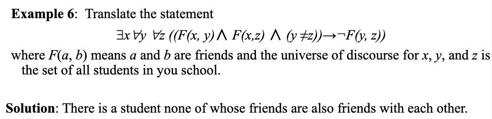


Negating Nested Quantifiers¶
De Morgan 定律也同样适用于嵌套量词的否定。
Prenex Normal Forms¶
构造前束范式（Prenex Normal Forms）的主要目的在于简化嵌套量词命题的表面结构，主要形式为 \(Q_1x_1Q_2x_2...Q_nx_nB\)，其中 \(Q_i(i=1,...,n)\) 是量词 \(\forall\) 或者 \(\exists\) ，\(B\) 不含量词。
所有的表达式都可以被转换为前束范式。转换方式如下：
- 消除命题中所有的 \(\rightarrow\) 和 \(\leftrightarrow\)
- 使所有否定符号 \(\neg\) 仅仅为 literal 的一部分
- 将变量标准化（如果有必要的话）
- 将所有全称量词挪到表达式的最前面
e.g. 将表达式 \(\forall x ((\exists y R(x,y) \land \forall y \neg S(x,y)) \rightarrow \neg (\exists y M(x,y) \land P))\) 转换为前束范式。

Rules of Inference¶
Arguments¶
一个用命题逻辑表达的论证（Argument）是一系列命题，除了最后一个命题其他都被称作前提（Premise），最后一个命题是结论（Conclusion）。
我们可以在一条线上表达前提，在线下表达结论，整个就形成了一个论证。
e.g.

Valid Arguments & Argument Form¶
如果一个论证的所有前提为真，蕴含着结论为真，那么这个论证是有效的（Valid）
命题逻辑中的论证形式（Argument Form）是一连串涉及命题变量的复合命题，无论用什么特定命题来替换其中的命题变量，如果前提均为真时结论为真，则称该论证形式是有效的。
一个论证形式（前提为 \(p_1,p_2,...,p_n\)，结论为 \(q\)）是有效的充要条件是 \(p_1 \land p_2 \land ...\land p_n \rightarrow q\) 是一个恒真命题。
Rules of Inference¶
| 名称 | 推理规则 | 恒真命题 |
|---|---|---|
| Modus Ponens (假言推理) |
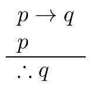 | \((p \land (p \rightarrow q)) \rightarrow q\) |
| Modus Tollens (取拒式 ) |
 |
\((\neg q \land (p \rightarrow q)) \rightarrow \neg p\) |
| Hypothetical Syllogism （假言三段论） |
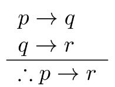 | \(((p \rightarrow q) \land (q \rightarrow r)) \rightarrow (p \rightarrow r)\) |
| Disjunctive Syllogism (析取三段论) |
 |
\((\neg p \land (p \lor q)) \rightarrow q\) |
| Addition (附加律) |
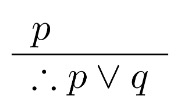 | \(p \rightarrow (p \lor q)\) |
| Simplification (化简律) |
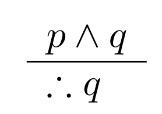 | \((p \land q) \rightarrow q\) |
| Conjunction (合取律) |
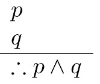 | \(((p) \land (q)) \rightarrow (p \land q)\) |
| Resolution (消解律) |
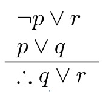 | \(((\neg p \lor r) \land (p \lor q)) \rightarrow (q \lor r)\) |
Build Valid Arguments¶
证明一个论证是否有效的方法如下：
- 假设所有的前提是 True
- 用 1.6.3 的推理规则和逻辑等价来确定最后的结论是否为 True
e.g.1. 从命题 \(p \land (p \rightarrow q)\) 说明 \(q\) 是一个结论。

e.g.2. 说明结论 \(\neg w\) 来自于假设 \((w \lor r) \rightarrow v,v \rightarrow (c \lor s),s \rightarrow u,\neg c \land \neg u\)
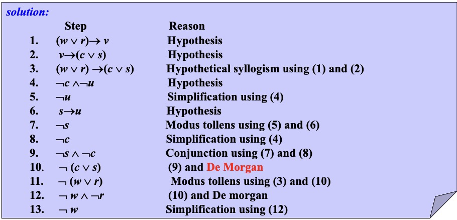
如果一个结论是以 \(p \rightarrow q\) 的形式给出，那么基于 \((p_1 \land p_2 \land ...\land p_n \land p) \rightarrow q \equiv (p_1 \land p_2 \land...\land p_n) \rightarrow (p \rightarrow q)\)，我们可以将原来的问题转换为 \(p_1 \land p_2 \land ... \land p_n \land p \Rightarrow q\)
e.g.3. 说明结论 \(r \rightarrow s\) 来自于假设 \(p \rightarrow (q \rightarrow s),\neg r \lor p,q\)

Fallacies¶
对于一个谬论（Fallacy），其主要有两种情况，一种为断言结论为真，另一种为否定假设。
e.g.1. \(((p\rightarrow q)\land q)\rightarrow p\) 不是恒真命题，因为当 \(p\) 为假而 \(q\) 为真时它为假。（断言结论为真）
e.g.2. \(((p\rightarrow q)\land \neg p)\rightarrow \neg q\) 不是恒真命题，因为当 \(p\) 为假而 \(q\) 为真时它为假。（否定假设）
Handling Quantified Statements¶
| 名称 | 推理规则 |
|---|---|
| Universal Instantiation(UI) （全称实例） |
 |
| Universal Generalization(UG) （全称引入） |
 |
| Existential Instantiation(EI) （存在实例） |
 |
| Existential Generalization(EG) （存在引入） |
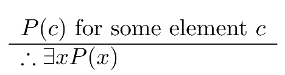 |
e.g. 证明以下论证是有效的：


Introduction to Proofs¶
Some Terminologies¶
- 定理（Theorem）：一个能够被证明是真的语句。
- 命题（Proposition）：不太重要的定理。
- 证明（Proof）：一个证明定理为真的论证。
- 公理（Axioms）：隐含的关于数学结构的假设，或即将证明的定理的假设，或已经被证明过的定理。
- 引理（Lemma）：一个“辅助定理”或者一个需要被证明为定理的结果。
- 推论（Corollary）：一个已经被证明的定理可以直接建立起来的定理。
- 猜想（Conjecture）：一个不知道是否为真的论述。
Direct Proofs¶
直接证明法（Direct Proofs）：为了证明 \(p \rightarrow q\) 为真（ \(p\) 可能为一些假设的合取），我们假设所有的前提为真，然后证明结论是否为真。
e.g. 给出定理“如果 \(n\) 是个奇数，那么 \(n^2\) 是个奇数”的直接证明。

Proof by Contraposition¶
反证法（Proof by Contraposition）：为了证明 \(p \rightarrow q\) 为真，我们假设结论为假（即 \(\neg q\) 为真），然后证明前提为假（即 \(\neg p\) 为真）。
e.g. 证明定理“一个完美数不是一个质数”，完美数满足除了自身所有因子的和为自身（如 \(6=1+2+3\) ）

Vacuous Proof¶
空证明（Vacuous Proof）：为了证明 \(p \rightarrow q\) 为真，我们可以直接证明前提为假。
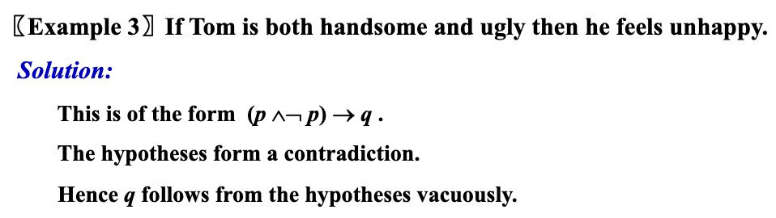
Trivial Proof¶
平凡证明（Trivial Proof）：为了证明 \(p \rightarrow q\) 为真，我们可以直接证明结论为真。

Proof by contradiction¶
归谬证明法（Proof by contradiction）：为了证明命题 \(p\) 为真，我们找到一个矛盾的论述 \(q\) （一般形式为 \(r \land \neg r\) ），使得 \(\neg p \rightarrow q\) 为真，由于 \(q\) 为假，那么 \(\neg p\) 为假，即 \(p\) 为真。
e.g. 证明有无穷多个素数

Proof of Equivalence¶
等价证明法（Proof of Equivalence）：为了证明 \(p_1,p_2,...,p_n\) 是等价的（即证明命题 \(p_1 \leftrightarrow p_2 \leftrightarrow ... \leftrightarrow p_n\) 为真），我们证明 \(p_1 \rightarrow p_2,p_2 \rightarrow p_3,...,p_{n-1} \rightarrow p_n,p_n \rightarrow p_1\) 为真
Proof Methods and Strategy¶
Exhaustive Proof and Proof by Cases¶
分情形证明法（Proof by Cases）：为了证明 \((p_1 \lor p_2 \lor ... \lor p_n) \rightarrow q\) 为真，我们分情形证明所有的 \(p_i \rightarrow q(i=1,2,...,n)\) 为真.
穷举证明法（Exhaustive Proof）：一种分情形证明法，穷尽所有可能性。
e.g. 证明“如果整数 \(n\) 不能被 \(3\) 整除，那么 \(n^2 \equiv 1(mod \space 3)\)”

Existence Proof¶
存在性证明（Existence Proof）：为了证明 \(\exists xP(x)\) 为真，我们找到定义域中的某个 \(c\) ，使得 \(P(c)\) 为真。
e.g. 证明对于每一个正整数 \(n\)，存在 \(n\) 个连续的复数。

或者我们可以假设没有定义域中的 \(c\) ，使得 \(P(c)\) 为真，然后得到矛盾。
e.g. 证明存在无理数。

Uniqueness Proofs¶
唯一性证明（Uniqueness Proofs）：为了证明存在唯一一个元素满足特定的性质（即命题 \(\exists x(P(x) \land \forall y(y \not = x \rightarrow \neg P(y)))\) ），我们可以先证明存在性（即证明存在某个元素 \(x\) 使得 \(P(x)\) 为真，然后证明唯一性（即证明如果 \(x\) 和 \(y\) 都使得 \(P(x)\) 和 \(P(y)\) 为真，那么 \(x=y\) ）
Chapter 2 The Basic Structures：Sets,Functions,Sequences,Sums and Matrices¶
Sets¶
Some Concepts of Set Theory¶
- 集合（Sets）：一个无序的对象的聚集（一般用大写字母来标记）
- 元素（Elements）/ 成员（Members）：在集合中的对象（一般用小写字母来标记）
- 我们称集合包含（Contain）它的元素
- 空集（The Empty/Void/Null Set）：没有元素的集合（一般用 \(\phi\) 或 \(\{\}\) 表示）
- 单元素集（Singleton Set）：只有一个元素的集合
e.g. \(a \in A\) 表示 \(a\) 是 \(A\) 的一个元素/成员
\(a \not \in A\) 表示 \(a\) 不是 \(A\) 的一个元素/成员
注意 \(\phi\) 和 \(\{\phi\}\) 是不一样的，前者为空集，后者为单元素集
The Description of Set¶
Roster Method¶
花名册方法（Roster Method）：当集合元素有限时，列举集合中所有的元素。
e.g. 小于 \(10\) 的奇数所组成的集合 \(S=\{1,3,5,7,9\}\)
Set Builder¶
集合构造器（Set Builder）：通过描述作为集合的成员必须具有的性质来刻画集合中的元素。
e.g. 小于 10 的奇数所组成的集合 \(S=\{x|x=2k+1(k=0,1,2,3,4)\}\)
Venn Diagrams¶
在韦恩图当中，用矩形框表达全集（Universal Set，包含所考虑的全部对象），用圆或者其他几何图形来表达集合，用点来表达集合中的特定元素。

Subsets¶
当集合 \(A\) 中的每一个元素都是集合 \(B\) 中的元素，称 \(A\) 是 \(B\) 的一个子集（Subsets），用 \(A \subseteq B\) 来表示。（\(A \subseteq B \Leftrightarrow \forall x (x \in A \rightarrow x \in B)\)）
对于任意集合 \(A\) ，空集 \(\phi \subseteq A\)，其自身 \(A \subseteq A\)
证明 \(A\) 是 \(B\) 的子集：如果要证明 \(A \subseteq B\)，需要证明如果 \(x\) 属于 \(A\) 那么 \(x\) 也属于 \(B\)
证明 \(A\) 不是 \(B\) 的子集：如果要证明 \(A \not \subseteq B\)，需要找一个 \(x \in A\) 使得 \(x \not \in B\)
Equal¶
当集合 \(A\) 和集合 \(B\) 含有相同的元素，称 \(A\) 和 \(B\) 是相等（Equal）的，用\(A=B\) 来表示。（\(A=B \Leftrightarrow \forall x[(x \in A \rightarrow x \in B) \land (x \in B \rightarrow x \in A)] \Leftrightarrow (A \subseteq B) \land (B \subseteq A)\)）
Proper Subsets¶
当集合 \(A\) 中的每一个元素都是集合 \(B\) 中的元素，但是集合 \(B\) 中含有其他不属于 \(A\) 的元素，称 \(A\) 是 \(B\) 的一个真子集（Proper Subsets），用 \(A \subset B\) 来表示。（\(A \subset B \Leftrightarrow \forall x [(x \in A \rightarrow x \in B) \land \exists x(x \in B \land x \not \in A)] \Leftrightarrow (A \subseteq B) \land (A \not = B)\)）
The Size of a Set¶
对于集合 \(S\)，如果 \(S\) 中恰好含有 \(n\) 个不同的元素（\(n\) 为非负整数），那么我们称 \(S\) 是一个有限集，\(n\) 是 \(S\) 的基数（Cardinality），记为 \(|S|=n\)
Power Sets¶
对于一个集合 \(S\) ，它的幂集（Power Sets）是它所有子集的集合，记为 \(P(S)=\{x|x \subseteq S\}\)
其性质如下：
- \(|S|=n \Leftrightarrow |P(S)|=2^n\)
- 如果 \(S\) 是一个有限集，那么 \(P(S)\) 也是一个有限集。
- \(x \in P(S) \Rightarrow x \subseteq S\)
- \(x \in S \Rightarrow \{x\} \in P(S)\)
- \(S \in P(S)\)
e.g.1. 求 \(\{\phi\}\) 和 \(\{\phi,\{\phi\}\}\) 的幂集。
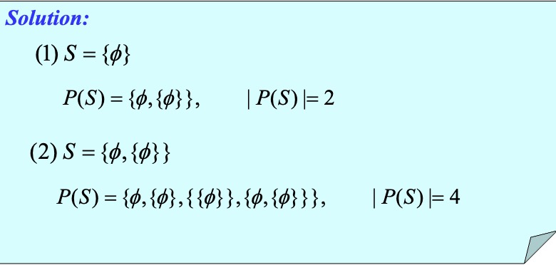
e.g.2. 证明 \(P(A) \in P(B) \Rightarrow A \in B\)

Cartesian Products¶
以 \(a_1\) 为第一个元素，\(a_2\) 为第二个元素，...，\(a_n\) 为第 \(n\) 个元素的有序聚集被称为有序 \(n\) 元组（Ordered n-tuple），用 \((a_1,a_2,...,a_n)\) 表示。特别地，若 \(n=2\)，二元组被称为序偶（Ordered Pair）。
\((a_1,a_2,...,a_n)=(b_1,b_2,...,b_n) \Leftrightarrow a_i=b_i(i=1,2,...,n)\)
令 \(A\) 和 \(B\) 为集合，\(A\) 和 \(B\) 的笛卡尔积（Cartesian Products）用 \(A\times B\) 表示，其中 \(A \times B=\{(a,b)|a \in A \land b \in B\}\)
更一般地，\(A_1\times A_2\times...\times A_n=\{(a_1,a_2,...,a_n)|a_i \in A_i(i=1,2,...,n)\}\)
其性质如下：
- 若 \(|A|=m,|B|=n\)，那么 \(|A\times B|=|B\times A|=mn\)
- \(A\times B \not =B\times A\)
- \(A\times \phi=\phi \times A=\phi\)
- \((x,y)\in A \times B \Rightarrow x \in A \land y \in B\)
- \((x,y)\not \in A \times B \Rightarrow x \not \in A \lor y \not \in B\)
e.g. \(A=\{a,b\},B=\{0,1,2\}\)，求 \(A\times B,B\times A\)

Using Set Notation with Quantifiers¶
\(\forall x \in S(P(x)) \Leftrightarrow \forall x(x \in S \rightarrow P(x))\)
\(\exists x \in S(P(x))\Leftrightarrow \exists x(x\in S \land P(x))\)
Truth Sets of Quantifiers¶
给定谓词 \(P\) 和定义域 \(D\) ，定义 \(P\) 的真值集（Truth Sets）为 \(D\) 中使 \(P(x)\) 为真的元素 \(x\) 组成的集合，记为 \(\{x \in D|P(x)\}\)
\(\forall xP(x)\) 如果在定义域 \(U\) 上为真，等价于其真值集为 \(U\)；\(\exists xP(x)\) 如果在定义域 \(U\) 上为真，等价于其真值集不为空。
Set Operations¶
Union¶
对于集合 \(A\) 和 \(B\)，其并集（Union）是一个包含 \(A\) 或 \(B\) 中或同时在 \(A\) 和 \(B\) 中的元素的集合，用 \(A \bigcup B\) 来表示。（\(A \bigcup B=\{x|x\in A \lor x \in B\}\)）

其性质如下：
- \(A\subseteq A \bigcup B,B\subseteq B \bigcup A\)
- \(A\subseteq C,B\subseteq C \Rightarrow A \bigcup B \subseteq C\)
- \(|A\bigcup B|\leq |A|+|B|\)
- \(A \bigcup B=B \Leftrightarrow A \subseteq B\)
Intersection¶
对于集合 \(A\) 和 \(B\)，其交集（Intersection）是一个包含同时在 \(A\) 和 \(B\) 中的元素的集合，用 \(A \bigcap B\) 来表示。（\(A \bigcap B=\{x|x\in A \land x \in B\}\)）
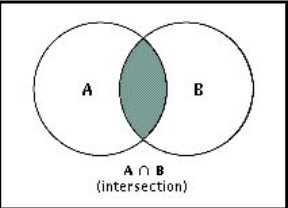
当两个集合的交集是一个空集时，称这两个集合是不相交的（Disjoint）（即 \(A\bigcap B=\phi\)）
其性质如下：
- \(A \bigcap B \subseteq A,A \bigcap B \subseteq B\)
- \(C\subseteq A,C\subseteq B\Rightarrow C\subseteq A \bigcap B\)
- \(|A\bigcap B|\leq |A|,|A\bigcap B|\leq |B|\)
- \(A\bigcap B=A\Leftrightarrow A \subseteq B\)
Complement¶
令 \(U\) 为全集，\(A\) 的补集（Complement）为在全集中不属于 \(A\) 的元素的集合，用 \(\overline A\) 来表示。（\(\overline A=\{x|x\not \in A,x \in U\}=\{x|\neg x \in A\}\)）
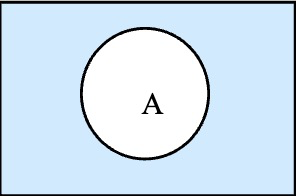
Difference¶
对于集合 \(A\) 和 \(B\)，\(A\) 与 \(B\) 的差集（Difference）是一个包含属于 \(A\) 但不属于 \(B\) 的元素的集合，用 \(A-B\) 来表示，也被称为 \(B\) 相对于 \(A\) 的补集。（\(A-B=\{x|x\in A \land x \not \in B\}=A \bigcap \overline B\)）

Symmetric Difference¶
对于集合 \(A\) 和 \(B\)，\(A\) 与 \(B\) 的对称差（Symmetric Difference）是一个包含属于 \(A\) 但不属于 \(B\) 和属于 \(B\) 但不属于 \(A\) 的元素的集合，用 \(A\oplus B\) 来表示。（\(A\oplus B=\{x|(x\in A \land x \not \in B) \lor (x\in B \land x \not \in A)\}=(A \bigcup B)-(A \bigcap B)\)）
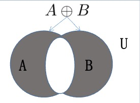
The Principle of Inclusion-Exclusion¶
容斥原理（The Principle of Inclusion-Exclusion）：\(|A \bigcup B|=|A|+|B|-|A \bigcap B|\)
更一般地：
\(|A_1\bigcup A_2\bigcup ... \bigcup A_n|=\sum\limits _{i=1} ^n|A_i|-\sum\limits _{1\leq i<j \leq n}|A_i \bigcap A_j|\\+\sum\limits _{1\leq i<j<k \leq n}|A_i\bigcap A_j\bigcap A_k|+...+(-1)^{n-1}|A_1\bigcap A_2\bigcap ... \bigcap A_n|\)
Set Identities¶
| Name | identity |
|---|---|
| Identity laws （恒等律） |
\(A \bigcup \phi=A\) \(A \bigcap U=A\) |
| Domination laws （支配律） |
\(A \bigcup U=U\) \(A \bigcap \phi=\phi\) |
| Idempotent laws （幂等律） |
\(A \bigcup A=A\) \(A \bigcap A=A\) |
| Complementation law （补律） |
\(\overline{\overline A}=A\) |
| Commutative laws （交换律） |
\(A \bigcup B=B \bigcup A\) \(A \bigcap B=B\bigcap A\) |
| Associative laws （结合律） |
\(A \bigcup (B \bigcup C)=(A \bigcup B)\bigcup C\) \(A \bigcap (B \bigcap C)=(A \bigcap B)\bigcap C\) |
| Distributive laws （分配律） |
\(A \bigcap (B \bigcup C)=(A \bigcap B) \bigcup (A \bigcap C)\) \(A \bigcup (B \bigcap C)=(A \bigcup B) \bigcap (A \bigcup C)\) |
| De Morgan's laws （德摩根定理） |
\(\overline{A \bigcup B}=\overline A \bigcap \overline B\) \(\overline{A \bigcap B}=\overline A \bigcup \overline B\) |
Generalized Unions and Intersections¶
令 \(A_1,A_2,...,A_n\) 为一系列已标号的集合，定义：
\(\stackrel{n}{\underset{i=1}{\bigcup}}A_i=A_1 \bigcup A_2 \bigcup ... \bigcup A_n\)（其中\(\stackrel{n}{\underset{i=1}{\bigcup}}A_i\) 包括的元素属于这一系列集合中至少一个集合）
\(\stackrel{n}{\underset{i=1}{\bigcap}}A_i=A_1 \bigcap A_2 \bigcap ... \bigcap A_n\)（其中\(\stackrel{n}{\underset{i=1}{\bigcap}}A_i\) 包括的元素属于这一系列所有集合）
Computer Representation of Set¶
在计算机中，用比特串（Bit String）来表示集合，设全集 \(U\) 是一个有限集（而且大小合适，使 \(U\) 的元素个数不超过计算机能使用的内存量）。为 \(U\) 的元素任意规定一个顺序，例如 \(a_1,a_2,...,a_n\)。于是可以用长度为 \(n\) 的比特串来表示 \(U\) 的子集 \(A\)，其中如果 \(a_i \in A\)，比特串中第 \(i\) 位是 1，否则为 0。
Functions¶
Introduction¶
定义：令 \(A\) 和 \(B\) 为非空集合，从 \(A\) 到 \(B\) 的函数（Functions） \(f\) 是对元素的一种指派，对 \(A\) 的每一个元素恰好指派 \(B\) 的一个元素。如果 \(B\) 中的元素 \(b\) 是唯一由 \(A\) 中的元素 \(a\) 经函数 \(f\) 指派的，那么我们就写为 \(f(a)=b\) 。如果 \(f\) 是从 \(A\) 到 \(B\) 的函数，就写为 \(f:A\rightarrow B\)。
函数有时也被称为映射（Mapping） 或者变换（Transformation）。
一个函数 \(f:A\rightarrow B\) 也可以被定义为集合 \(A \times B\) 的子集。如果对于每一个元素 \(a \in A\) 都有且仅有一个序偶 \((a,b)\) ，那么它就定义了 \(A\) 到 \(B\) 的一个函数 \(f\)。这个函数可以写作 \(f(a)=b\) 。其中这个子集满足对于序偶 \((a,b)\)，子集中有且仅有这一个以 \(a\) 为第一个元素的序偶。
用逻辑表达式来表述：\((\forall x[x\in A \rightarrow \exists y[y \in B \land (x,y)\in f]]) \land (\forall x,y_1,y_2[[(x,y_1)\in f \land (x,y_2)\in f]\rightarrow y_1=y_2])\)
如果 \(f\) 是从 \(A\) 到 \(B\) 的函数，我们称 \(f\) 把 \(A\) 映射到 \(B\) 或者 \(f\) 是从 \(A\) 到 \(B\) 的映射。其中 \(A\) 被称为 \(f\) 的定义域（Domain），\(B\) 被称为 \(f\) 的陪域（Codomain）。如果 \(f(a)=b\)，那么 \(b\) 被称为 \(a\) 在映射 \(f\) 下的像（Image），\(a\) 被称为 \(b\) 的原像（Preimage）。\(A\) 中所有元素的像的集合被称为 \(f\) 的值域（Range），记作 \(f(A)\)。
如果两个函数含有相同的定义域，相同的值域，定义域中的每个元素映射到陪域中相同的元素时，称这两个函数是相等（Equal）的。
令函数 \(f_1\) 和 \(f_2\) 是从 \(A\) 到 \(\R\) 的映射，定义 \(f_1+f_2\) 和 \(f_1f_2\) ： $$ (f_1+f_2)(x)=f_1(x)+f_2(x)\ (f_1f_2)(x)=f_1(x)f_2(x) $$ 令函数 \(f\) 是从 \(A\) 到 \(B\) 的映射，\(S\) 是 \(A\) 的一个子集，那么 \(S\) 的像就是 \(B\) 的一个子集（其中包含 \(S\) 中元素的像），记作 \(f(S)\) （这是一个集合而非一个值！）。那么有表达式 \(f(S)=\{f(s)|s\in S\}\) 。
One-to-one Functions¶
一个从 \(A\) 到 \(B\) 的函数 \(f\) 被称为是一对一（One-to-one）或单射（Injection/Injective）函数，当且仅当对于 \(f\) 定义域中所有的 \(a\) 和 \(b\) ，当 \(f(a)=f(b)\) 时有 \(a=b\)。（即对于函数陪域中的有原像的元素 \(b\) ，它的原像是唯一的）
用逻辑表达式来表述：\(\forall a\forall b(a\in A \land b \in A \land (f(a)=f(b)\rightarrow a=b))\)，\(\forall a\forall b(a\in A \land b \in A \land (a\not= b \rightarrow f(a)\not=f(b)))\)
一个函数是：
- 递增的：\(\forall x\forall y(x<y \rightarrow f(x)\leq f(y))\)
- 严格递增的：\(\forall x \forall y(x<y \rightarrow f(x)<f(y))\)
- 递减的：\(\forall x \forall y(x<y\rightarrow f(x)\geq f(y))\)
- 严格递减的：\(\forall x\forall y(x<y \rightarrow f(x)>f(y))\)
Onto Functions¶
一个从 \(A\) 到 \(B\) 的函数 \(f\) 被称为是映上（Onto）或满射（Surjection/Surjective）函数，当且仅当对每个 \(b\in B\) 有元素 \(a\in A\) 使得 \(f(a)=b\)。（即对于函数陪域中的每个元素 \(b\)，它都存在原像）
用逻辑表达式来表述：\(\forall b(b\in B\rightarrow \exists a(a\in A \land f(a)=b))\)
One-to-one Correspondence Functions¶
如果一个函数 \(f\) 既是一对一的又是映上的，那么称这个函数是一一对应（One-to-one Correspondence）或双射（Bijection/Bijective）函数。
如果从 \(A\) 到 \(B\) 的函数 \(f\) 是双射函数，那么集合 \(A\) 和 \(B\) 含有相同的元素个数或者相同的基数。
假设 \(f:A\rightarrow B\)：
- 要证明 \(f\) 是单射的：证明对于任意 \(x,y\in A\)，如果 \(f(x)=f(y)\)，则 \(x=y\)
- 要证明 \(f\) 不是单射的：找到特定的 \(x,y\in A\)，使得 \(x\not= y\) 且 \(f(x)=f(y)\)
- 要证明 \(f\) 是满射的：考虑任意元素 \(y\in B\)，并找到一个元素 \(x\in A\) 使得 \(f(x)=y\)
- 要证明 \(f\) 不是满射的：找到一个特定的 \(y\in B\)，使得对于任意 \(x\in A\) 有 \(f(x)\not=y\)
Inverse Functions¶
令 \(f\) 为从集合 \(A\) 到集合 \(B\) 的一一对应（只有一一对应才有反函数！）。\(f\) 的反函数/逆函数（Inverse Functions）将 \(B\) 中的元素 \(b\) 指派给 \(A\) 中的唯一元素 \(a\)（满足 \(f(a)=b\)），用 \(f^{-1}\) 来表示。（即 \(f(a)=b\) 时，\(f^{-1}(b)=a\)）
Some Important Functions¶
向下取整函数（Floor Function）\(f(x)=\lfloor x \rfloor\) 表示小于等于 \(x\) 的最大整数（一般也被称为取整函数，也可记为 \(f(x)=[x]\)）。
向上取整函数（Ceiling Function）\(f(x)=\lceil x \rceil\) 表示大于等于 \(x\) 的最小整数。
其性质如下：
- \(\lfloor x \rfloor =n \Leftrightarrow x-1<n \leq x<n+1(n \in \Z)\)
- \(\lceil x \rceil =n \Leftrightarrow n-1<x\leq n<x+1(n \in \Z)\)
- \(x-1<\lfloor x \rfloor\leq x \leq \lceil x \rceil <x+1\)
- \(\lfloor -x \rfloor=-\lceil x \rceil\)
- \(\lceil -x \rceil=-\lfloor x \rfloor\)
- \(\lfloor x+m\rfloor=\lfloor x\rfloor+m(m\in \Z)\)
- \(\lceil x+m \rceil=\lceil x \rceil+m(m\in \Z)\)
Sequences and Summations¶
Sequences¶
序列（Sequence）是一个从整数集的的一个子集（通常为集合 \(\{0,1,2,3,4,...\}\) 或集合 \(\{1,2,3,4,...\}\) 到一个集合 \(S\) 的函数。用记号 \(a_n\) 表示整数 \(n\) 的像，称其为序列的一个项（Term），用记号 \(\{a_n\}\) 来表示序列。
Some Famliar Sequences¶
几何级数是形式如 \(a,ar,ar^2,...,ar^n,...\) 的序列（其中初始项 \(a\) 和公比 \(r\) 都是实数）。
算数级数是形式如 \(a,a+d,a+2d,...,a+nd,...\) 的序列（其中初始项 \(a\) 和公差 \(d\) 都是实数）。
Strings¶
有穷序列也被称为串（Strings），可以被记为 \(a_1a_2...a_n\) ，串的长度是这个串的项数。空串是没有任何项的串，记作 \(\lambda\) ，其长度为 0。
Recurrence Relation¶
关于序列 \(\{a_n\}\) 的递推关系（Recurrence Relation）是一个等式，对所有满足 \(n \geq n_0\) 的 \(n\) ，它把 \(a_n\) 用序列中前面的项，即 \(a_0,a_1,...,a_{n-1}\) 的一项或多项来表示，其中 \(n_0\) 是一个非负整数。
如果一个序列的项满足递推关系，则该序列被称为是递推关系的一个解（Solution）
一个序列的初始条件（Initial Conditions）规定了在递推关系定义的首项前的那些项。
Cardinality of Sets¶
Cardinality¶
集合 \(A\) 和集合 \(B\) 有相同的基数（Cardinality）\(\Leftrightarrow\) 存在从 \(A\) 到 \(B\) 的一个一一对应，记为 \(|A|=|B|\)
e.g. 令集合 \(A\) 为 \((a,b)\) 之间所有的实数 \((a<b)\) ，集合 \(B\) 为 \((0,1)\) 之间所有的实数，证明 \(|A|=|B|\) 。
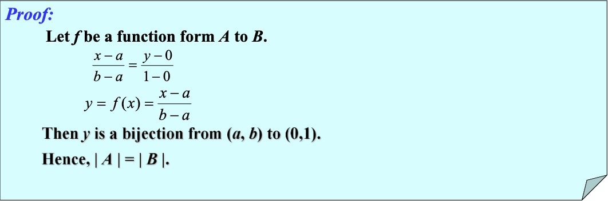
如果存在一个从 \(A\) 到 \(B\) 的一对一函数，则 \(A\) 的基数小于等于 \(B\) 的基数，记为 \(|A|\leq |B|\) ，如果 \(A\) 和 \(B\) 有不同的基数时，\(A\) 的基数小于 \(B\) 的基数，记为 \(|A|<|B|\)
Countable Sets¶
如果一个集合是有限集或者与自然数集具有相同的基数，那么这个集合就被称为可数的（Countable），否则这个集合就被称为不可数的（Uncountable）。
当一个无限集 \(S\) 是可数的，我们用符号 \(\aleph_0\) 来表示集合 \(S\) 的基数，记为 \(|S|=\aleph_0\) ，并且称 \(S\) 有基数“阿里夫零”。
一个无限集是可数的 \(\Leftrightarrow\) 可以把集合中的元素排列成序列（以正整数为下标）。
Uncountable Sets¶
定理：
-
\((0,1)\) 中所有的实数组成的集合是不可数的，更一般地，实数集 \(\R\) 是不可数的。
-
任何含有不可数的子集的集合是不可数的
- \(|\R|=\aleph\)
- 不存在一个无限集，其基数比可数集小。
- 两个可数集的并集也是可数的。
e.g. 证明 \(|(0,1)|=|[0,1]|\)

Uncomputable Function-An Important Application in CS¶
定义：如果存在某种编程语言写的计算机程序能计算一个函数的值，那么这个函数被称为是可计算的（Computable），否则被称为是不可计算的（Uncomputable）
Continuum Hypothesis¶
康托尔定理：一个集合的基数总是小于其幂集的基数
连续统假设： \(|P(Z^+)|=|R|=c\)，不存在介于 \(\aleph_0\) 和 \(c\) 的基数。即不存在一个集合，它的基数比正整数集合的基数大，又比实数集集合的基数小。
Matrices¶
基本与线性代数相同，主要的新概念有 0-1 矩阵。
Zero-One Matrices¶
所有元素非 0 即 1 的矩阵称为 0-1矩阵（Zero-One Matrices）。
令 \(A=[a_{ij}]\) 和 \(B=[b_{ij}]\) 为 \(m\times n\) 阶 0-1 矩阵。\(A\lor B\) 是 0-1 矩阵，其 \((i,j)\) 元素为 \(a_{ij}\lor b_{ij}\)。\(A\land B\) 是 0-1 矩阵，其 \((i,j)\) 元素是 \(a_{ij}\land b_{ij}\) 。
令 \(A=[a_{ij}]\) 为 \(m\times k\) 阶 0-1 矩阵，\(B=[b_{ij}]\) 为 \(k\times n\) 阶 0-1 矩阵。\(A\) 和 \(B\) 的布尔积记作 \(A\bigodot B\) ，是 \(m\times n\) 矩阵 \([c_{ij}]\) ，其中 \(c_{ij}=(a_{i1}\land b_{1j})\lor (a_{i2}\land b_{2j}) \lor ... \lor (a_{ik}\land b_{kj})\)
令 \(A\) 为 0-1 方阵，\(r\) 为正整数。\(A\) 的 \(r\) 次布尔幂记作 \(A^{[r]}\) ，\(A^{[r]}=\underbrace{A\bigodot A\bigodot A\bigodot ... \bigodot A}_{(r个A)}\)
Chapter 3：Algorithms¶
Algorithms¶
定义：一个算法（Algorithm）是解决一个问题的精确指令的有限集。
Properties of Algorithms¶
- 输入：算法从一个指定的集合得到输入值
- 输出：对每个输入值集合，算法都要从一个指定的集合中产生输出值，即为问题的解
- 确定性：算法的步骤必须是准确定义的
- 正确性：对每一组输入值，算法都应产生正确的输出值
- 有限性：对任何输入算法都应在有限（可能很多）步之后产生期望的输出
- 有效性：算法的每一步都应能够准确地在有效时间内完成
- 通用性：算法过程应该可以应用于期望形式的所有问题，而不只是用于一组特定的输入值
The Growth of Functions¶
Big-O Notation¶
定义：令 \(f\) 和 \(g\) 为从整数集或实数集到实数集的函数。如果存在常数 \(C\) 和 \(k\) 使得只要当 \(x>k\) 时就有 \(|f(x)|\leq C|g(x)|\)，称 \(f(x)\) 是 \(O(g(x))\) 的。
e.g. 证明 \(f(x)=x^2+2x+1\) 是 \(O(x^2)\) 的。

如果两个函数 \(f(x)\) 和 \(g(x)\) 满足 \(f(x)\) 是 \(O(g(x))\) 的，以及 \(g(x)\) 是 \(O(f(x))\) 的，我们称 \(f(x)\) 和 \(g(x)\) 是同阶的
Big-O Estimates for Polynomials¶
令 \(f(x)=a_nx^n+a_{n-1}x^{n-1}+...+a_1x+a_0\) ，其中 \(a_0,a_1,...,a_{n-1},a_n\) 为实数。那么 \(f(x)\) 是 \(O(x^n)\) 的。
The Growth of Combinations of Functions¶
如果 \(f_1(x)\) 是 \(O(g_1(x))\) 的，\(f_2(x)\) 是 \(O(g_2(x))\) 的，那么 \((f_1+f_2)(x)\) 是 \(O(max\{|g_1(x)|,|g_2(x)|\})\) 的；\((f_1f_2)(x)\) 是 \(O(g_1(x)g_2(x))\) 的。
Big-Omega Notation¶
定义：令 \(f\) 和 \(g\) 为从整数集或实数集到实数集的函数。如果存在常数 \(C\) 和 \(k\) 使得只要当 \(x>k\) 时就有 \(|f(x)|\geq C|g(x)|\)，称 \(f(x)\) 是 \(\Omega(g(x))\) 的。
e.g. 证明 \(f(x)=8x^3+5x^2+7\) 是 \(\Omega(x^3)\) 的
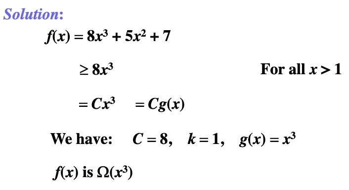
Big-Theta¶
定义：令 \(f\) 和 \(g\) 为从整数集或实数集到实数集的函数。如果 \(f(x)\) 是 \(O(g(x))\) 的且 \(f(x)\) 是 \(\Omega(g(x))\) 的，称 \(f(x)\) 是 \(\Theta(g(x))\) 的，即 \(f(x)\) 是 \(g(x)\) 阶的，或 \(f(x)\) 和 \(g(x)\) 是同阶的。
Chapter 4 : The Number Theory and Cryptography¶
Divisibility and Modular Arithmetic¶
Division¶
定义：如果 \(a\) 和 \(b\) 都为整数且 \(a\not =0\) ，如果存在一个整数 \(c\) 使得 \(b=ac\) （或者 \(b/a\) 是一个整数），那么称 \(a\) 整除 \(b\) （用 \(a|b\) 表示），\(a\) 是 \(b\) 的一个因子或除数，而 \(b\) 是 \(a\) 的一个倍数，用 \(a\nmid b\) 表示 \(a\) 不整除 \(b\) 。
定理：令 \(a,b,c\) 为整数，其中 \(a\not= 0\)
- 如果 \(a|b\) 和 \(a|c\) ，那么对任意整数 \(m\) 和 \(n\) 都有 \(a|(mb+nc)\)
- 如果 \(a|b\) ，那么对所有整数 \(c\) 都有 \(a|bc\)
- 如果 \(a|b\)，\(b|c\)，则 \(a|c\)
Division Algorithm¶
除法算法（Division Algorithm）：令 \(a\) 为整数，\(d\) 为正整数。则存在唯一的整数 \(q\) 和 \(r\) ，满足 \(0\leq r<d\)，使得 \(a=dq+r\) ，其中 \(d\) 称为除数（Divisor），\(a\) 称为被除数（Dividend），\(q\) 称为商（Quotient）（记为 \(q=a\space div\space d\)），\(r\) 称为余数（Remainder）（记为 \(r=a\space mod \space d\)）。
Congruence Relation¶
定义：如果 \(a\) 和 \(b\) 为整数而 \(m\) 为正整数，则当 \(m\) 整除 \(a-b\) 时称 \(a\) 模 \(m\) 同余（Congruent） \(b\)，用式子 \(a\equiv b(mod\space m)\) 表示，该式子被称为同余式（Congruence），\(m\) 被称为它的模（Modulus），用 \(a\not \equiv b(mod\space m)\) 表示 \(a\) 和 \(b\) 不是模 \(m\) 同余的。
定理：令 \(a\) 和 \(b\) 为整数，\(m\) 为正整数
- \(a\equiv b(mod\space m) \Leftrightarrow a\space mod\space m=b\space mod \space m \Leftrightarrow \exists k \in \Z,a=b+km\)
- 如果 \(a\equiv b(mod\space m),c\equiv d(mod\space m)\)，则 \(a+c\equiv b+d(mod\space m),ac\equiv bd(mod\space m)\)（一般地，当 \(d=c\) 时，\(a+c\equiv b+c(mod\space m),ac\equiv bc(mod\space m)\)）
- \((a+b)\space mod \space m=((a\space mod\space m)+(b\space mod \space m))mod\space m\)
- \(ab\space mod\space m=((a\space mod\space m)(b\space mod \space m))mod\space m\)
Arithmetic Modulo¶
在 \(\Z_m\) 上，即小于 \(m\) 的非负整数的集合 \(\{0,1,...,m-1\}\) 上定义算术运算，定义这些整数的加法（用 \(+_m\) 表示）：\(a+_mb=(a+b)mod\space m\)；定义这些整数的乘法（用 \(·_m\) 表示）：\(a·_mb=(a·b)mod\space m\)。这些运算被称为模 \(m\) 算术。
模 \(m\) 算术满足如下性质：
- 封闭性：如果 \(a\) 和 \(b\) 属于 \(\Z_m\)，则 \(a+_mb\) 和 \(a·_mb\) 也属于 \(\Z_m\)
- 结合律：如果 \(a\) 和 \(b\) 属于 \(\Z_m\)，则 \((a+_mb)+_mc=a+_m(b+_mc),(a·_mb)·_mc=a·_m(b·_mc)\)
- 交换律：如果 \(a\) 和 \(b\) 属于 \(\Z_m\)，则 \(a+_mb=b+_ma,a·_mb=b·_ma\)
- 单位元：元素 0 和 1 分别是模 \(m\) 加法和乘法的单位元。即如果 \(a\) 属于 \(\Z_m\)，则 \(a+_m0=0+_ma=a,a·_m1=1·_ma=a\)
- 加法逆元：如果 \(a\not =0\) 属于 \(\Z_m\)，则 \(m-a\) 是 \(a\) 的模 \(m\) 加法逆元，而 0 是其自身的加法逆元。即 \(a+_m(m-a)=0,0+_m0=0\)
- 分配律：如果 \(a,b\) 和 \(c\) 属于 \(\Z_m\)，则 \(a·_m(b+_mc)=(a·_mb)+_m(a·_mc),(a+_mb)·_mc=(a·_mc)+_m(b·_mc)\)
Integer Representations and Algorithms¶
Primes and Greatest Common Divisors¶
Primes¶
定义：如果一个大于 1 的整数 \(p\) 的正因子只是 1 和 \(p\)，那么这个整数被称为素数（Prime）；大于 1 但又不是素数的正整数被称为合数（Composite）
The Fundamental Theorem of Arithmetic¶
算术基本定理（The Fundamental Theorem of Arithmetic）：每一个大于 1 的整数都可以唯一地写为两个或多个素数的乘积，其中素数因子以非递减序排列。（即质因子分解）
Trial Division¶
定理：如果 \(n\) 是一个合数，那么 \(n\) 必有一个素因子小于等于 \(\sqrt{n}\)
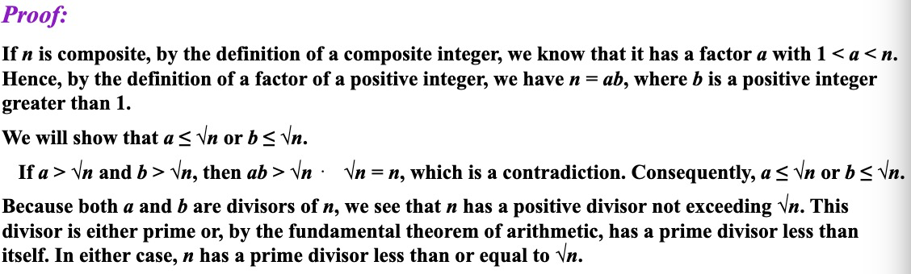
Infinitude of Primes¶
定理：存在无穷多个素数

Mersenne Primes¶
定义：如果一个素数被表示为 \(2^p-1\)，其中 \(p\) 为素数，那么这个素数被称为梅森素数（Mersenne Primes）
Distribution of Primes¶
素数定理（Prime Number Theorem）：当 \(x\) 无限增长时，不超过 \(x\) 的素数个数（记为 \(\pi(x)\)）与 \(\frac{x}{\ln x}\) 之比趋近于 1。
Greatest Common Divisor¶
定义：令 \(a\) 和 \(b\) 是两个整数，不全为 0。 能使 \(d|a\) 和 \(d|b\) 的最大整数 \(d\) 称为 \(a\) 和 \(b\) 的最大公约数（Greatest Common Divisor），记作 \(\gcd(a,b)\)。
如果整数 \(a\) 和 \(b\) 的最大公约数是 1，那么称它们是互素的（Relatively Prime）。
更一般地，当 \(1\leq i<j\leq n\) 时都有 \(\gcd(a_i,a_j)=1\) ，那么称整数 \(a_1,a_2,...,a_n\) 是两两互素的（Pairwise Relatively Prime）。
Least Common Multiple¶
定义：正整数 \(a\) 和 \(b\) 的最小公倍数（Least Common Multiple）是能被 \(a\) 和 \(b\) 整除的最小正整数，记作 \(lcm(a,b)\) 。
Prime Factorizations¶
假设 \(a\) 和 \(b\) 的质因数分解式（Prime Factorizations）为：
\(a=p_1^{a_1}p_2^{a_2}...p_n^{a_n},b=p_1^{b_1}p_2^{b_2}...p_n^{b_n}\)
那么 \(a\) 和 \(b\) 的最大公约数可被表示为：\(\gcd(a,b)=p_1^{\min(a_1,b_1)}p_2^{\min(a_2,b_2)}...p_n^{\min(a_n,b_n)}\)
最小公倍数可被表示为：\(lcm(a,b)=p_1^{\max(a_1,b_1)}p_2^{\max(a_2,b_2)}...p_n^{\max(a_n,b_n)}\)
\(ab=\gcd(a,b)\times lcm(a,b)\)
Euclidean Algorithm¶
令 \(a=bq+r\)，其中 \(a,b,q\) 和 \(r\) 均为整数。则 \(\gcd(a,b)=\gcd(b,r)\)

欧几里得算法（Euclidean Algorithm）：辗转相除法求最大公约数。（当 \(a\geq b\) 时时间复杂度为 \(O(\log\space b)\)
gcds as Linear Combinations¶
贝祖定理（Bézout’s Theorem）：如果 \(a\) 和 \(b\) 为正整数，则存在整数 \(s\) 和 \(t\) 使得 \(\gcd(a,b)=sa+tb\)，其中 \(s\) 和 \(t\) 被称为 \(a\) 和 \(b\) 的贝祖系数（Bézout’s Coefficients），等式被称为贝祖恒等式。
e.g. 将 \(\gcd(252,198)=18\) 表达为贝祖恒等式。
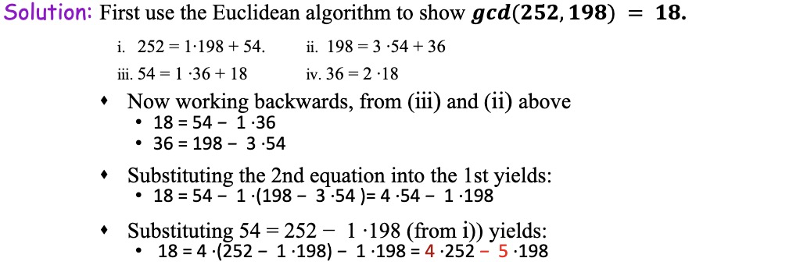
由贝祖定理可以推导出如下定理：
- 如果 \(a,b\) 和 \(c\) 为正整数，使得 \(\gcd(a,b)=1\) 且 \(a|bc\)，则 \(a|c\)

-
如果 \(p\) 是素数，且 \(p|a_1a_2...a_n\)，其中 \(a_i\) 为整数，则对于某个 \(i\)，\(p|a_i\)
-
令 \(m\) 为正整数，\(a,b\) 和 \(c\) 为整数。如果 \(ac\equiv bc(mod\space m)\) 且 \(\gcd(c,m)=1\)，则 \(a\equiv b(mod\space m)\)
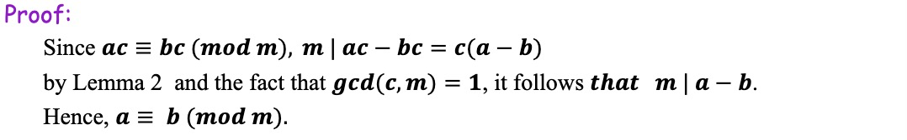
Solving Congruences¶
Linear Congruences¶
定义：具有形式 \(ax\equiv b(mod\space m)\) 的同余方程（其中 \(m\) 为正整数，\(a\) 和 \(b\) 为整数，\(x\) 为变量）被称为线性同余方程（Linear Congruences）
Inverse of a modulo m¶
如果存在一个整数 \(\overline{a}\)，使得 \(\overline{a}a\equiv 1(mod\space m)\)，那么称整数 \(\overline{a}\) 为 \(a\) 模 \(m\) 的逆（Inverse of \(a\) modulo \(m\)）
定理：如果 \(a\) 和 \(m\) 为互素的整数且 \(m>1\)，则 \(a\) 模 \(m\) 的逆存在。更进一步地，这个模 \(m\) 的逆是唯一的。（即存在唯一小于 \(m\) 的正整数 \(\overline{a}\) 是 \(a\) 模 \(m\) 的逆，并且 \(a\) 模 \(m\) 的其他每个逆均和 \(\overline{a}\) 模 \(m\) 同余）
证明：由 \(\gcd(a,m)=1\) 及贝祖定理得存在整数 \(s\) 和 \(t\) 使得 \(sa+tm=1\)，即 \(sa+tm\equiv 1(mod\space m)\)，由 \(tm\equiv 0(mod\space m)\)，则 \(sa\equiv 1(mod\space m)\)，即 \(s\) 为 \(a\) 模 \(m\) 的逆。
e.g.1. 找到 3 模 7 的逆。

e.g.2. 找到 101 模 4620 的逆。

Using Inverses to Solve Congruences¶
e.g. 解同余方程 \(3x\equiv 4(mod\space 7)\)
由 4.4.2 e.g.1. 得 -2 是 3 模 7 的逆，在同余式两边同乘 -2 得 \(-2\times3x\equiv -2\times4(mod\space 7)\)，因为 \(-6\equiv 1(mod\space 7)\) 且 \(-8\equiv 6(mod\space 7)\)，所以如果 \(x\) 是解，则有 \(x\equiv -8\equiv 6(mod\space 7)\)
The Chinese Remainder Theorem¶
中国剩余定理（The Chinese Remainder Theorem）：令 \(m_1,m_2,...,m_n\) 为大于 1 的两两互素的正整数，而 \(a_1,a_2,...,a_n\) 是任意整数。则同余方程组 $$ \begin{cases} x\equiv a_1(mod\space m_1)\ x\equiv a_2(mod\space m_2)\ \cdots\ x\equiv a_n(mod\space m_n) \end{cases} $$ 有唯一的模 \(m=m_1m_2...m_n\) 的解（即存在一个满足 \(0\leq x\leq m\) 的解 \(x\)，而所有其他的解均与此解模 \(m\) 同余）

e.g. 求解同余方程组
$$
\begin{cases}
x\equiv 2(mod\space 3)\
x\equiv 3(mod\space 5)\
x\equiv 2(mod\space 7)
\end{cases}
$$

Back Substitution¶
回代方法是另一种求解同余方程组的方法。
e.g. 求解同余方程组
$$
\begin{cases}
x\equiv 1(mod\space 5)\
x\equiv 2(mod\space 6)\
x\equiv 3(mod\space 7)
\end{cases}
$$

Computer Arithmetic with Large Integers¶
假定 \(m_1,m_2,...m_n\) 是两两互素的模数，并令 \(m\) 为其乘积。根据中国剩余定理可以证明满足 \(0\leq a<m\) 的整数 \(a\) 可唯一地表示为一个 \(n\) 元组，其元素由 \(a\) 除以 \(m_i\) 的余数组成（\(i=1,2,..n\)）。即 \(a\) 可以唯一地表示为 \((a\space mod\space m_1,a\space mod\space m_2,...,a\space mod\space m_n)\)（被用于处理大整数）
e.g. 利用模数为 \(99,98,97,95\) 来寻找 \(123684\) 和 \(413456\) 的和。

Fermat's Little Theorem¶
费马小定理（Fermat's Little Theorem）：如果 \(p\) 为素数，\(a\) 是一个不能被 \(p\) 整除的整数，则 \(a^{p-1}\equiv 1(mod\space p)\)。更一般地，对每个整数 \(a\) 都有 \(a^p\equiv a(mod\space p)\)。
e.g. 求 \(7^{222}\space mod \space 11\)

Pseudoprimes¶
定义：令 \(b\) 是一个正整数。如果 \(n\) 是一个正合数且 \(b^{n-1}\equiv 1(mod\space n)\)，则 \(n\) 称为以 \(b\) 为基数的伪素数（Pseudoprimes）
卡米切尔数（Carmichael Numbers）：一个正合数 \(n\) 如果对于所有满足 \(\gcd(b,n)=1\) 的正整数 \(b\) 都有同余式 \(b^{n-1}\equiv 1(mod\space n)\) 成立，则被称为卡米切尔数。
e.g. 561 是一个卡米切尔数。
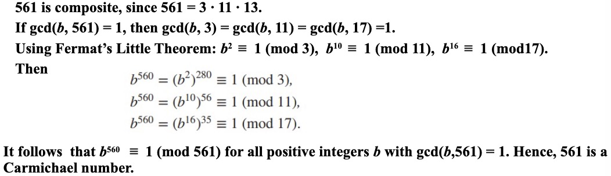
Chapter 5 : Induction and Recursion¶
Mathematical Induction¶
Principle of Mathematical Induction¶
第一数学归纳法（The First Principle of Mathematical Induction）：\((P(1)\land\forall k(P(k)\rightarrow P(k+1)))\rightarrow\forall nP(n)\)，更一般地，\(\forall n[n\geq k\rightarrow P(n)]\)

Guidelines:Mathmatical Induction Proofs¶

Strong Induction and Well-ordering¶
第二数学归纳法/强归纳法/完全归纳法（The Second Principle of Mathematical Induction/Strong Induction/Complete Induction）：\((P(n_0)\land\forall k(k\geq n_0\land P(n_0)\land P(n_0+1)\land...\land P(k)\rightarrow P(k+1)))\rightarrow\forall nP(n)\)
Recursive Definition and Structural Induction¶
Lame's Theorem¶
拉梅定理（Lame's Theorem）：设 \(a\) 和 \(b\) 是满足 \(a\geq b\) 的正整数。则欧几里得算法为了求出 \(\gcd(a,b)\) 而使用的除法的次数小于等于 \(b\) 的十进制位数的 5 倍。
Recursively Defined Sets¶
集合可以以递归的形式定义：
- 基础步骤：规定一些初始的元素。
- 递归步骤：给出用来从已知属于集合的元素来构造集合的新元素的规则。
Strings¶
字母表 \(\Sigma\) 上的字符串的集合 \(\Sigma^*\) 递归的定义为：
- 基础步骤：\(\lambda\in\Sigma^*\)（其中 \(\lambda\) 是不包含任何符号的空串）
- 递归步骤：若 \(\omega\in\Sigma^*\) 且 \(x\in\Sigma\) 则 \(\omega x\in\Sigma^*\)
通过连接运算可以组合两个字符串。设 \(\Sigma\) 是符号的集合，\(\Sigma^*\) 是 \(\Sigma\) 中符号形成的字符串的集合。可以如下定义两个字符串的连接，用 \(·\) 表示：
- 基础步骤：若 \(\omega\in\Sigma^*\)，则 \(\omega·\lambda=\omega\)，其中 \(\lambda\) 是空串。
- 递归步骤：若 \(\omega_1\in\Sigma^*\) 且 \(\omega_2\in\Sigma^*\) 以及 \(x\in\Sigma\) ，则 \(\omega_1·(\omega_2x)=(\omega_1·\omega_2)x\)
Rooted Trees¶
根树（Rooted Trees）：由一个顶点集合和连接这些顶点的边组成的，顶点集合包含的一个特殊顶点称为树根。
- 基础步骤：单个顶点 \(r\) 是根树。
- 递归步骤：假设 \(T_1,T_2,...,T_n\) 是根树，分别带有树根 \(r_1,r_2,...,r_n\)。则如下形成的图也是根树：从树根 \(r\) 开始，\(r\) 不属于根树 \(T_1,T_2,...,T_n\) 中的任何一个，从 \(r\) 到顶点 \(r_1,r_2,...,r_n\) 中的每个都加入一条边。
Full Binary Trees¶
以下这些步骤可以递归地定义满二叉树的集合：
- 基础步骤：存在一个只含有单个顶点的满二叉树。
- 递归步骤：如果 \(T_1\) 和 \(T_2\) 都是满二叉树，则存在一个表示为 \(T_1·T_2\) 的满二叉树，它包含树根 \(r\) 和连接从 \(r\) 到左子树 \(T_1\) 和右子树 \(T_2\) 各自的根的边。
Structural Induction¶
结构归纳法（Structural Induction）包含如下两个部分：
- 基础步骤：证明对于递归定义的基础步骤所规定的属于该集合的所有元素来说，结果成立。
- 递归步骤：证明如果对于定义的递归步骤中用来构造新元素的每个元素来说命题为真，则对于这些新的元素来说结果成立。
e.g. 递归地定义满二叉树 \(T\) 的高度 \(h(T)\)。
- 基础步骤：只含有树根 \(r\) 的满二叉树 \(T\) 的高度是 \(h(T)=0\)。
- 递归步骤：如果 \(T_1\) 和 \(T_2\) 都是满二叉树，则满二叉树 \(T=T_1·T_2\) 有高度 \(h(T)=1+max\{h(T_1),h(T_2)\}\)
用结构归纳法证明如果 \(T\) 是满二叉树，则 \(n(T)\leq 2^{h(T)+1}-1\)。
Chapter 6 : Counting¶
The Basics of Counting¶
Basic Counting Principles : The Product Rule¶
乘积法则（The Product Rule）：假定一个过程可以被分解成两个任务。如果完成第一个任务有 \(n_1\) 种方式，在第一个任务完成之后有 \(n_2\) 种方式完成第二个任务，那么完成这个过程有 \(n_1n_2\) 种方式。
Basic Counting Principles : The Sum Rule¶
求和法则（The Sum Rule）：如果完成第一项任务有 \(n_1\) 种方式，完成第二项任务有 \(n_2\) 种方式，并且这些任务不能同时执行，那么完成第一或第二项任务有 \(n_1+n_2\) 种方式。
Basic Counting Principles : The Subtraction Rule¶
减法法则（The Subtraction Rule）：如果一个任务或者可以通过 \(n_1\) 种方法执行，或者可以通过 \(n_2\) 种另一类方法执行，那么执行这个任务的方法数是 \(n_1+n_2\) 减去两类方法中相同的方法（与容斥原理类似）
Basic Counting Principles : Division Rule¶
除法法则（Division Rule）：如果一个任务能由一个可以用 \(n\) 种方式完成的过程实现，而对于每种完成任务的方式 \(\omega\)，在 \(n\) 种方式中正好有 \(d\) 种与之对应，那么完成这个任务的方法数为 \(n/d\)。
The Pigeonhole Principle¶
The Pigeonhole Principle¶
鸽巢原理（The Pigeonhole Principle）/狄利克雷抽屉原理（Dirichlet Drawer Principle）：如果 \(k+1\) 个或更多的物体放入 \(k\) 个盒子，那么至少有一个盒子包含了 \(2\) 个或更多的物体。
推论：一个从 \(k+1\) 甚至更多个元素的集合到 \(k\) 个元素的集合的函数 \(f\) 不是一对一函数。
The Generalized Pigeonhole Principle¶
广义鸽巢原理（The Generalized Pigeonhole Principle）：如果 \(N\) 个物体放入 \(k\) 个盒子，那么至少有一个盒子包含了至少 \(\lceil N/k\rceil\) 个物体。
Permutations and Combinations¶
与高中所学排列（Permutations）组合（Combinations）相同
Binomial Coefficients¶
Powers of Binomial Expressions¶
定义：二项式（Binomial Expressions）是两项的和，例如 \(x+y\)。（更一般地，这些项可以是常数与变量的积）
The Binomial Theorem¶
二项式定理（The Binomial Theorem）：设 \(x\) 和 \(y\) 是变量，\(n\) 是非负整数，那么 \((x+y)^n=\sum\limits_{j=0}^{n}\begin{pmatrix}n\\j\end{pmatrix}x^{n-j}y^j\)，其中\(\begin{pmatrix}n\\j\end{pmatrix}=C_n^j\)
推论：
- \(\sum\limits_{k=0}^n\begin{pmatrix}n\\k\end{pmatrix}=2^n\)
- \(\sum\limits_{k=0}^{n}(-1)^k\begin{pmatrix}n\\k\end{pmatrix}=0\)
- \(\sum\limits_{k=0}^n2^k\begin{pmatrix}n\\k\end{pmatrix}=3^n\)
Pascal's Identity¶
帕斯卡恒等式（Pascal's Identity）：设 \(n\) 和 \(k\) 是满足 \(n\geq k\) 的正整数，那么有 \(\begin{pmatrix}n+1\\k\end{pmatrix}=\begin{pmatrix}n\\k-1\end{pmatrix}+\begin{pmatrix}n\\k\end{pmatrix}\)
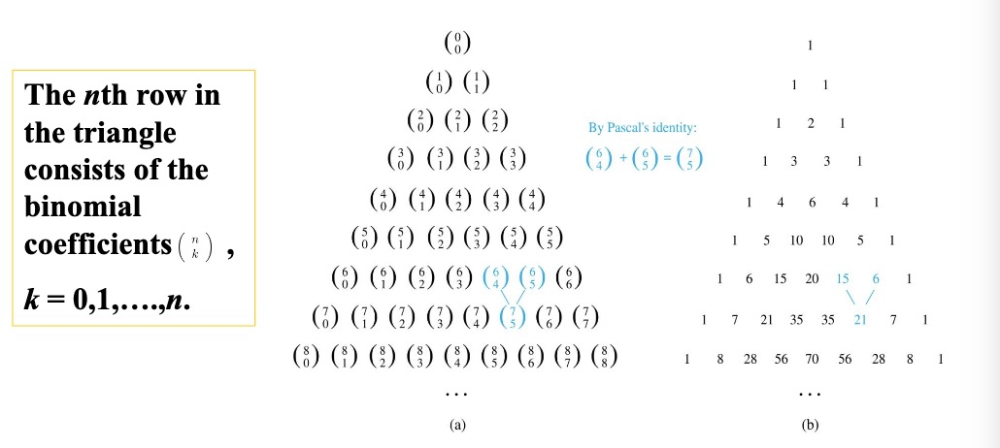
Other Identity Involving Binomial Coefficients¶
范德蒙德恒等式（Vandermonde's Identity）：设 \(m,n,r\) 是非负整数，其中 \(r\) 不超过 \(m\) 或 \(n\)，那么 \(\begin{pmatrix}m+n\\r\end{pmatrix}=\sum\limits_{k=0}^r\begin{pmatrix}m\\r-k\end{pmatrix}\begin{pmatrix}n\\k\end{pmatrix}\)
推论：如果 \(n\) 是一个非负整数，那么 \(\begin{pmatrix}2n\\n\end{pmatrix}=\sum\limits_{k=0}^n\begin{pmatrix}n\\k\end{pmatrix}^2\)
设 \(n\) 和 \(r\) 是非负整数，\(r\leq n\) ，那么 \(\begin{pmatrix}n+1\\r+1\end{pmatrix}=\sum\limits_{j=r}^n\begin{pmatrix}j\\r\end{pmatrix}\)
Generalized Permutations and Combinations¶
与高中所学基本类似，补充第二类斯特林数：
设 \(S(n,j)\) 表示将 \(n\) 个可辨别的物体放入 \(j\) 个不可辨别的盒子的方式数，其中不允许有空的盒子。数 \(S(n,j)\) 称为第二类斯特林数（Stirling numbers of the second kind），有如下性质：
- \(S(r,1)=S(r,r)=1\)
- \(S(r,2)=2^{r-1}-1\)
- \(S(r,r-1)=C(r,2)\)
- \(S(r+1,n)=S(r,n-1)+nS(r,n)\)
- \(S(n,j)=\frac{1}{j!}\sum\limits_{i=0}^{j-1}(-1)^i\begin{pmatrix}j\\i\end{pmatrix}(j-i)^n\)
Chapter 7 Discrete Probability¶
Chapter 8 : Advanced Counting Techniques¶
Applications of Recurrence Relations¶
用递推求总方法数（e.g.Hanoi，Fibonacci...）
Solving Linear Recurrence Relations¶
特征根&特征方程，与高中类似，补充内容：
Linear Homogeneous Recurrence Relations¶
- Linear（线性）
- Homogeneous（齐次），Inhomogeneous/Nonhomogeneous（非齐次）
- Constant coefficients（常系数）
- Degree k：如果递推关系中用到了 k 项，那么这个递推关系的度为 \(k\)
Theorems¶
-
设 \(c_1\) 和 \(c_2\) 是实数。假设 \(r^2-c_1r-c_2=0\) 有两个不相等的根 \(r_1\) 和 \(r_2\) ，那么 \(a_n=\alpha_1r_1^n+\alpha_2r_2^n\) 是递推关系 \(a_n=c_1a_{n-1}+c_2a_{n-2}\) 的解（\(n=0,1,2,...\)），其中 \(\alpha_1,\alpha_2\) 是常数。一般地，设 \(c_1,c_2,...,c_k\) 是实数。假设特征方程 \(r^k-c_1r^{k-1}-...-c_k=0\) 有 \(k\) 个不相等的根 \(r_1,r_2,...,r_k\)。那么 \(a_n=\alpha_1r_1^n+\alpha_2r_2^n+...+\alpha_kr_k^n\) 是递推关系 \(a_n=c_1a_{n-1}+c_2a_{n-2}+...+c_ka_{n-k}\) 的解
-
设 \(c_1\) 和 \(c_2\) 是实数，\(c_2\not=0\)。假设 \(r^2-c_1r-c_2=0\) 只有一个根 \(r_0\) ，那么 \(a_n=\alpha_1r_0^n+\alpha_2nr_0^n\) 是递推关系 \(a_n=c_1a_{n-1}+c_2a_{n-2}\) 的解（\(n=0,1,2,...\)），其中 \(\alpha_1,\alpha_2\) 是常数。一般地，设 \(c_1,c_2,...,c_k\) 是实数。假设特征方程 \(r^k-c_1r^{k-1}-...-c_k=0\) 有 \(t\) 个不相等的根 \(r_1,r_2,...,r_t\)，其重数分别为 \(m_1,m_2,...,m_t\)。那么 \(a_n=(\alpha_{1,0}+\alpha_{1,1}n+...+\alpha_{1,m-1}n^{m_1-1})r_1^n\\+(\alpha_{2,0}+\alpha_{2,1}n+...+\alpha_{2,m_2-1}n^{m_2-1})r_2^n\\+...+(\alpha_{t,0}+\alpha_{t,1}n+...+\alpha_{t,m_t-1}n^{m_t-1})r_t^n\) 是递推关系 \(a_n=c_1a_{n-1}+c_2a_{n-2}+...+c_ka_{n-k}\) 的解（\(n=0,1,2,...\)），其中 \(\alpha_{i,j}\) 是常数，\(1\leq i\leq t\) 且 \(0\leq j\leq m_i-1\)
-
如果 \(a_n^{(p)}\) 是常系数非齐次线性递推关系 \(a_n=c_1a_{n-1}+c_2a_{n-2}+...+c_ka_{n-k}+F(n)\) 的一个特解，那么每个解都是 \(a_n^{(p)}+a_n^{(k)}\) 的形式，其中 \(a_n^{(k)}\) 是相伴的齐次递推关系 \(a_n=c_1a_{n-1}+c_2a_{n-2}+...+c_ka_{n-k}\) 的一个解
-
假设 \(\{a_n\}\) 满足线性非齐次递推关系 \(a_n=c_1a_{n-1}+c_2a_{n-2}+...+c_ka_{n-k}+F(n)\)，且 \(F(n)=(b_tn^t+b_{t-1}n^{t-1}+...+b_1n+b_0)s^n\) ，其中 \(b_0,b_1,...,b_t\) 和 \(s\) 是实数，当 \(s\) 不是相伴的线性齐次递推关系的特征方程的根时，存在一个特解 \((p_tn^t+p_{t-1}n^{t-1}+...+p_1n+p_0)s^n\)，当 \(s\) 是特征方程的根且它的重数是 \(m\) 时，存在一个特解 \(n^m(p_tn^t+p_{t-1}n^{t-1}+...+p_1n+p_0)s^n\)
Divide-and-Conquer
Generating Functions¶
与 vjf 所学级数类似，重点概念：
生成函数（Generating Function）：序列 \(a_0,a_1,a_2,...,a_k,...\) 的生成函数为 \(G(x)=a_0+a_1x+...+a_kx^k+...=\sum\limits_{k=0}^{\infin}a_kx^k\)

8.5-8.6 Inclusion-Exclusion and Its Application¶
与广义容斥原理相同，补充内容：
- 设 \(m\) 和 \(n\) 是正整数，满足 \(m\geq n\) 。那么存在 \(n^m-C(n,1)(n-1)^m+C(n,2)(n-2)^m-...+(-1)^{n-1}C(n,n-1)*1^m\) 个从 \(m\) 元素集合到 \(n\) 元素集合的映上函数。
- \(n\) 元素集合的错位排列数是 \(D_n=n![1-\frac{1}{1!}+\frac{1}{2!}-\frac{1}{3!}+...+(-1)^n\frac{1}{n!}]\)
Chapter 9 : Relations¶
Relations and Their Properties¶
Binary Relation¶
设 \(A\) 和 \(B\) 是集合，一个从 \(A\) 到 \(B\) 的二元关系（Binary Relation）是 \(A\times B\) 的子集。更一般地，设 \(A_1,A_2,...,A_n\) 是集合，一个关于 \(A_1,A_2,...,A_n\) 的 \(n\) 元关系是 \(A_1\times A_2\times...\times A_n\) 的子集。
Relations On A Set¶
集合 \(A\) 上的关系是从 \(A\) 到 \(A\) 的关系。
可以用一个 \(m\times n\) 的连接矩阵 \(M_R=[m_{ij}]\) 来表示集合 \(A=\{a_1,a_2,...,a_m\}\) 和 \(B=\{b_1,b_2,...,b_n\}\) 之间的关系，其中 \(m_{ij}=\begin{cases}1,(a_i,b_j)\in R\\0,(a_i,b_j)\not\in R\end{cases}\)
e.g.

Properties of Binary Relations¶
- 自反性（Reflexive Relations）：若 \(\forall x(x\in A \rightarrow (x,x)\in R)\)，那么定义在集合 \(A\) 上的关系 \(R\) 称为自反的。
- 反自反性（Irreflexive Relations）：若 \(\forall x(x\in A\rightarrow (x,x)\not\in R)\) ，那么定义在集合 \(A\) 上的关系 \(R\) 称为反自反的。
- 对称性（Symmetric Relations）：若 \(\forall x\forall y((x,y)\in R\rightarrow (y,x)\in R)\) ，那么定义在集合 \(A\) 上的关系 \(R\) 称为对称的。
- 反对称性（Antisymmetric Relations）：若 \(\forall x\forall y((x,y)\in R \land (y,x)\in R\rightarrow x=y)\)，那么定义在集合 \(A\) 上的关系 \(R\) 称为反对称的。
- 传递性（Transitive Relations）：若 \(\forall x\forall y\forall z((x,y)\in R \land (y,z)\in R \rightarrow (x,z)\in R)\)，那么定义在集合 \(A\) 上的关系 \(R\) 称为传递的。
Combining Relations¶
设 \(A=\{a_1,a_2,...,a_n\},B=\{b_1,b_2,...,b_m\}，M_{R_1}=[c_{ij}],M_{R_2}=[d_{ij}]\)，通过连接矩阵来表示：
- \(M_{R_1\bigcup R_2}=[c_{ij}\lor d_{ij}]=M_{R_1}\lor M_{R_2}\)
- \(M_{R_1\bigcap R_2}=[c_{ij}\land d_{ij}]=M_{R_1}\land M_{R_2}\)
- \(M_{\overline{R_1}}=[\overline{c_{ij}}]\)
- \(M_{R_1-R_2}=M_{R_1\bigcap \overline{R_2}}=[c_{ij}\land \overline{d_{ij}}]\)
设 \(R\) 是从集合 \(A\) 到集合 \(B\) 的关系，\(S\) 是从集合 \(B\) 到集合 \(C\) 的关系。\(R\) 与 \(S\) 的合成是由有序对 \((a,c)\) 的集合构成的关系，其中 \(a\in A,c\in C\)，并且存在一个 \(b\in B\) 的元素，使得 \((a,b)\in R\) 且 \((b,c)\in S\)。我们用 \(S\circ R\) 表示 \(R\) 与 \(S\) 的合成。\(M_{R\circ S}=M_S\times M_R\)
The Power of a relation R¶
设 \(R\) 是集合 \(A\) 上的关系。\(R\) 的 \(n\) 次幂 \(R^n(n=1,2,3,...)\) 递归地定义为 \(R^1=R\) 和 \(R^{n+1}=R^n\circ R\)
定理：集合 \(A\) 上的关系 \(R\) 是传递的，当且仅当对 \(n=1,2,3,...\) 有 \(R^n\subseteq R\)
Inverse Relation¶
设 \(R\) 是从 \(A\) 到 \(B\) 的关系，那么其逆关系 \(R^{-1}/R^c=\{(b,a)|(a,b)\in R,a\in A,b\in B\}\)
逆关系具有如下性质：
- \((R\bigcup S)^{-1}=R^{-1}\bigcup S^{-1}\)
- \((R\bigcap S)^{-1}=R^{-1}\bigcap S^{-1}\)
- \(\overline{R}^{-1}=\overline{R^{-1}}\)
- \((R-S)^{-1}=R^{-1}-S^{-1}\)
- \((A\times B)^{-1}=B\times A\)
- \(\overline{R}=A\times B-R\)
- \((S\circ T)^{-1}=T^{-1}\circ S^{-1}\)
- \((R\circ T)\circ P=R\circ(T\circ P)\)
- \((R\bigcup S)\circ T=R\circ T\bigcup S\circ T\)
n-ary Relations and Their Applications¶
Representing Relations¶
Closures of Relations¶
What Is Closures of Relations¶
定义：设 \(R\) 是集合 \(A\) 上的关系，关系 \(R\) 具有性质 \(P\) 的闭包（Closure） 即为集合 \(A\) 上包含 \(R\) 的具有性质 \(P\) 的关系 \(S\) ，并且 \(S\) 是每一个包含 \(R\) 的具有性质 \(P\) 的 \(A\times A\) 的子集。（简单理解即为 \(R\) 的具有性质 \(P\) 的闭包就是把 \(R\) 与满足性质 \(P\) 的关系的集合取并）
Reflexive Closure¶
定义：设 \(R\) 是集合 \(A\) 上的关系，那么 \(R\) 的自反闭包（Reflexive Closure），记为 \(r(R)\) ，是 \(R\bigcup I_A\) （其中 \(I_A\) 即为 \(A\) 的对角关系，\(I_A=\{(x,x)|x\in A\}\)）
\(R=R\bigcup I_A\Leftrightarrow R\) 是一个自反闭包
e.g. \(R=\{(a,b)|a<b,a,b\in Z\}\)，求 \(R\) 的自反闭包。

Symmetric Closure¶
定义：设 \(R\) 是集合 \(A\) 上的关系，那么 \(R\) 的对称闭包（Symmetric Closure），记为 \(s(R)\) ，是 \(R\bigcup R^{-1}\) 。
\(R=R\bigcup R^{-1}\Leftrightarrow R\) 是一个对称闭包

Transitive Closure¶
定义：设 \(R\) 是集合 \(A\) 上的关系，那么 \(R\) 的传递闭包（Transitive Closure），记为 \(t(R)\) ，满足 \(\forall a\in A\space\forall b\in A\space a\) 可达 \(b\rightarrow (a,b)\in R\)
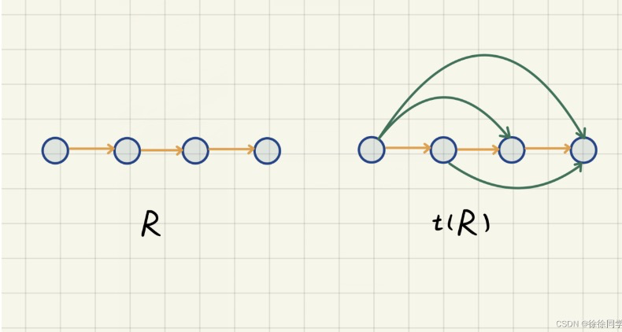
定理：设 \(R\) 是集合 \(A\) 上的关系，那么存在一条 \(a\) 到 \(b\) 长度为 \(n\) 的路径 \(\Leftrightarrow (a,b)\in R^n\)。

Connectivity Relation¶
定义：连通关系（Connectivity Relation）即为一个有序对 \((a,b)\) 的集合，满足在 \(R\) 中存在一个 \(a\) 到 \(b\) 的道路，记为 \(R^*\) 。
定理：
- \(t(R)=R^*\)
- 如果 \(|A|=n\)，那么任何长度大于 \(n\) 的道路一定含有回环。
- 如果 \(|A|=n\) ，\(R\) 是集合 \(A\) 上的关系，那么 \(\exists k,k\leq n,R^*=R\bigcup R^2\bigcup...\bigcup R^k,t(R)=R^*=R\bigcup R^2\bigcup...\bigcup R^n\)
- \(M_{t(R)}=M_R\lor M_R^{[2]}\lor...\lor M_R^{[n]}\)
Warshall's Algorithm¶
内部顶点：对于一条从 \(a\) 到 \(b\) 的路径，除了起点 \(a\) 和终点 \(b\) 出现在路径中的所有顶点。
沃舍尔算法（Warshall's Algorithm）：构造一系列 0-1 矩阵 \(W_0,W_1,...,W_n\) ，其中 \(W_0=M_R,W_k=[\omega_{ij}^{(k)}]\)，其中如果存在一条从 \(v_i\) 到 \(v_j\) 的路径使得这条路径的所有内部顶点都在集合 \(\{v_1,v_2,...,v_k\}\) （前 \(k\) 个顶点）中，那么 \(\omega_{ij}^{(k)}=1\)，否则为 0（这条路径的起点和终点可能在集合之外），由定义可知 \(W_n=M_{t(R)}\)
引理：\(\omega_{ij}^{[k]}=\omega_{ij}^{[k-1]}\lor(\omega_{ik}^{[k-1]}\land\omega_{kj}^{[k-1]})\)
Equivalence Relations¶
Equivalence Relations¶
如果一个定义在集合 \(A\) 上的关系 \(R\) 是自反的、对称的和传递的，那么称关系 \(R\) 是等价关系（Equivalence Relations）。若两个元素 \(a\) 和 \(b\) 通过等价关系而关联，则称它们是等价的，记为 \(a\)~\(b\)。
Equivalence Class¶
设 \(R\) 是定义在集合 \(A\) 上的等价关系，与 \(A\) 中其中一个元素 \(a\) 有关系的所有元素的集合叫作 \(a\) 的等价类（Equivalence Class），记作 \([a]_R/[a]\)，由定义 \([a]_R=\{s|(a,s)\in R\}\)，如果 \(b\in [a]_R\)，那么称 \(b\) 为等价类的代表。
e.g. 模 3 同余的关系 \(R=\{(a,b)|a\equiv b(mod\space3),a,b\in Z\}\)，证明其是一个等价关系并指出其等价类。
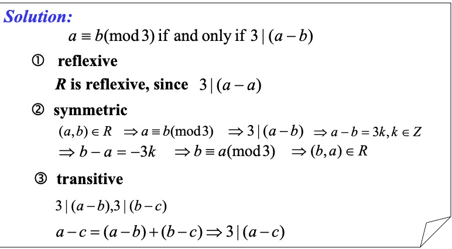

Partition of a Set¶
令 \(\{A_1,A_2,...\}\) 是 \(A\) 的子集的组合。那么这个组合被称为 \(A\) 的划分（Partition，记作 \(pr(A)\)）当且仅当：
- \(A_i\not=\phi,i\in Z\)
- \(A_i\bigcap A_j=\phi,i\not=j\)
- \(\forall a\in A,\exists i, a\in A_i(i=1,2,...)\)
Equivalence Classes and Partitions¶
令 \(R\) 是一个集合 \(A\) 上的等价关系，定理：
- \(aRb\Leftrightarrow [a]=[b]\Leftrightarrow [a]\bigcap[b]\not=\phi\)
- \(R\) 的等价类是 \(A\) 的划分。反过来说，如果给定一个 \(A\) 的划分 \(\{A_i|i\in I\}\)，那么一定有一个对应的等价关系 \(R\)，使得其等价类为这个划分。
The Operations of Equivalence Relations¶
如果 \(R_1,R_2\) 是 \(A\) 的等价关系，定理：
- \(R_1\bigcap R_2\) 也是 \(A\) 的等价关系。
- \(R_1\bigcup R_2\) 是 \(A\) 的对称和自反关系。
- \((R_1\bigcup R_2)^*\) 也是 \(A\) 的等价关系。
Partial Orderings¶
Partial Orderings¶
令 \(R\) 是集合 \(S\) 上的关系，如果 \(R\) 是自反的、反对称的、传递的，那么称 \(R\) 为偏序（Partial Ordering/Partial Order），记为 \((S,R)\)。用记号 \(a\preccurlyeq b\) 来表示 \((a,b)\in R\)，\(a \prec b\) 表示 \((a,b)\in R,a\not=b\)，\(\preccurlyeq\) 表示所有的偏序，\((S,\preccurlyeq)\) 表示所有的偏序集。
设偏序集 \((S,\preccurlyeq)\) 中的元素 \(a,b\)，如果 \(a\preccurlyeq b\) 或 \(b\preccurlyeq a\) ，那么称 \(a\) 和 \(b\) 是可比的（Comparable）；否则为不可比的（Incomparable）。
如果 \((S,\preccurlyeq)\) 是偏序集，且 \(S\) 中的每对元素都是可比的，则 \(S\) 称为全序集或线序集（Totally Ordered Set/Linearly Ordered Set），\(\preccurlyeq\) 被称为全序或线序（Total Order/Linear Order），一个全序集也被称为链。
对于偏序集 \((S,\preccurlyeq)\) ，如果 \(\preccurlyeq\) 是全序，并且 \(S\) 的每个非空子集都有一个最小元素，就称其为良序集（Well-Ordered Set）。
良序归纳原理：设 \(S\) 是一个良序集。归纳步骤：对所有 \(y\in S\) ，如果 \(P(x)\) 对所有 \(x\in S\) 且 \(x\prec y\) 为真，\(P(y)\) 为真，结论为 \(P(x)\) 对所有 \(x\in S\) 为真
Lexicographic Order¶
对于两个偏序集 \((A_1,\preccurlyeq_1)\) 和 \((A_2,\preccurlyeq_2)\) ，那么在 \(A_1\times A_2\) 上的字典顺序（Lexicographic Order）\(\prec\) 定义为：\((a_1,a_2)\prec(b_1,b_2)\Leftrightarrow (a_1\prec_1b_1) \lor((a_1=b_1)\land(a_2\prec_2b_2))\)
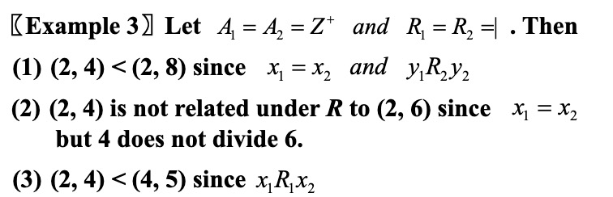
Hasse diagrams¶

Chain and Antichain¶
设 \((A,\preccurlyeq)\) 是一个偏序集，\(B\subseteq A\)，如果 \((B,\preccurlyeq)\) 是一个全序集，那么 \(B\) 被称为 \((A,\preccurlyeq)\) 的链（Chain），链的长度为 \(|B|\)；如果 \(B\subseteq A\)，\(\forall a,b\in B(a\neq b),(a,b)\not\in R,(b,a)\not\in R\)，那么 \(B\) 被称为 \((A,\preccurlyeq)\) 的反链（Antichain）。
Maximal and Minimal Elements¶
设 \((A,\preccurlyeq)\) 是一个偏序集，如果不存在 \(b\in A\) 使得 \(a\prec b\)，那么 \(a\) 在偏序集 \((A,\preccurlyeq)\) 中是极大元（Maximal Elements）；如果不存在 \(b\in A\) 使得 \(b\prec a\)，那么 \(a\) 在偏序集 \((A,\preccurlyeq)\) 中是极小元（Minimal Elements）
Greatest and Least Element¶
设 \((A,\preccurlyeq)\) 是一个偏序集，如果对所有的 \(b\in A\) 有 \(b\preccurlyeq a\)，那么 \(a\) 在偏序集 \((A,\preccurlyeq)\) 中是最大元（Greatest Elements）；如果对所有的 \(b\in A\) 有 \(a\preccurlyeq b\)，那么 \(a\) 在偏序集 \((A,\preccurlyeq)\) 中是最小元（Least Elements）
定理：当最大/最小元存在时，它是唯一的。
Upper and Lower Bounds¶
设 \(A\) 是 \(S\) 的一个子集，如果 \(u\) 是 \(S\) 中的元素，使得对所有的元素 \(a\in A\) 有 \(a\preccurlyeq u\)，那么 \(u\) 被称为 \(A\) 的一个上界（Upper Bounds）；如果 \(u\) 是 \(S\) 中的元素，使得对所有的元素 \(a\in A\) 有 \(u\preccurlyeq a\)，那么 \(u\) 被称为 \(A\) 的一个下界（Lower Bounds）。
若任意 \(a\in A\) 有 \(a\preccurlyeq x\)，并且对于 \(A\) 的任意上界 \(z\) 有 \(x\preccurlyeq z\)，则 \(x\) 被称为 \(A\) 的最小上界（Least Upper Bounds），记作 \(lub(A)\)；如果 \(y\) 是 \(A\) 的下界，并且对于 \(A\) 的任意下界 \(z\)，有 \(z\preccurlyeq y\)，则 \(y\) 被称为 \(A\) 的最大下界（Greatest Lower Bounds），记作 \(glb(A)\)。
Lattices¶
如果一个偏序集的每对元素都有最小上界和最大下界，那么称这个偏序集为格（Lattices）
Topological Sorting¶
如果只要 \(aRb\) 就有 \(a\preccurlyeq b\)，则称一个全序 \(\preccurlyeq\) 与偏序 \(R\) 是相容的（Compatible）。从一个偏序构造一个相容的全序称为拓扑排序（Topological Sorting）。
引理：每个有穷非空偏序集 \((S,\preccurlyeq)\) 至少有一个极小元。
Chapter 10 : Graphs¶
Graphs and Graph Models¶
Graphs¶
定义：图（Graph） \(G=(V,E)\) 由顶点（Vertices）（或结点（Nodes））的非空集 \(V\) 和边（Edge）集 \(E\) 构成，每条边有一个或两个顶点与它相连，这样的顶点称为边的端点（Endpoints），边连接它的端点。
顶点集为无限集或有无限条边的图称为无限图（Infinite Graph）；顶点集和边集为有限集的图称为有限图（Finite Graph）。
每条边都连接两个不同的顶点且没有两条不同的边连接一对相同顶点的图称为简单图（Simple Graph）；有多重边（Multiple edges）（多条边连接同一对顶点）连接同一对顶点的图称为多重图（Multigraph）；包含环（Loops）或存在多重边连接同一对顶点或同一个顶点的图称为伪图（Pseudograph）。
定义：有向图（Directed Graph/Digraph） \((V,E)\) 由一个非空顶点集 \(V\) 和一个有向边（Directed edges）（或弧（Arcs））集 \(E\) 组成。每条有向边与一个顶点有序对相关联。我们称与有序对 \((u,v)\) 相关联的有向边开始于 \(u\)，结束于 \(v\)。
当一个有向图不包含环和多重有向边时，就称为简单有向图（Simple Directed Graph）；含有从一个顶点指向第二个（也许是同一个）顶点的多重有向边的有向图称为有向多重图（Directed Multigraph）。当 \(m\) 条有向边中的每一条都与顶点有序对 \((u,v)\) 相关联时，称 \((u,v)\) 是一条多重度为 \(m\) 的边。
定义：既包含有向边又包含无向边的图称为混合图（Mixed Graph）。
Graph Terminology and Special Types of Graphs¶
Basic Terminology¶
对于无向图 \(G=(V,E)\)：
若 \(u\) 和 \(v\) 是无向图中的一条边 \(e\) 的端点，则称两个顶点 \(u\) 和 \(v\) 在 \(G\) 里邻接（Adjacent）（或相邻（Neighbors））。这样的边 \(e\) 称为关联（Incident）顶点 \(u\) 和 \(v\)，也可以说边 \(e\) 连接（Connect） \(u\) 和 \(v\)。
顶点 \(v\) 的所有相邻顶点的集合，记作 \(N(v)\)，称为顶点 \(v\) 的邻居（Neighborhood）。若 \(A\) 是 \(V\) 的子集，我们用 \(N(A)\) 表示图 \(G\) 中至少和 \(A\) 中一个顶点相邻的所有顶点的集合。所以 \(N(A)=\bigcup\limits_{v\in A}N(v)\)。
顶点的度（Degree）是与该顶点相关联的边的数目，记作 \(deg(v)\)。特别地，顶点上的环为顶点的度做出双倍贡献。度为 0 的顶点称为孤立的（Isolated）；度为 1 的顶点称为悬挂的（Pendant）。
握手定理：设 \(G=(V,E)\) 是有 \(m\) 条边的无向图，则 \(2m=\sum\limits_{v\in V}deg(v)\)。
推论：无向图有偶数个度为奇数的顶点。
对于有向图 \(G=(V,E)\)：
当 \((u,v)\) 是 \(G\) 的有向边时，说 \(u\) 邻接到（Adjacent to） \(v\)，或 \(v\) 从 \(u\) 邻接（Adjacent From）。顶点 \(u\) 称为 \((u,v)\) 的起点（Initial Vertex），\(v\) 称为 \((u,v)\) 的终点（Terminal Vertex）。环的起点和终点是相同的。
顶点 \(v\) 的入度（In Degree），记作 \(deg^-(v)\)，是以 \(v\) 作为终点的边数。顶点 \(v\) 的出度（Out Degree），记作 \(deg^+(v)\)，是以 \(v\) 作为起点的边数。特别地，顶点上的环对这个顶点的入度和出度的贡献都是 1 。
\(\sum\limits_{v\in V}deg^-(v)=\sum\limits_{v\in V}deg^+(v)=|E|\)
忽略边的方向后得到的无向图称为基本无向图（Underlying Undirected Graph）。
Some Special Simple Graphs¶
Complete Graphs¶
\(n\) 个顶点的完全图（Complete Graphs）记作 \(K_n\)，是在每对不同顶点之间都恰有一条边的简单图；至少有一对不同的顶点不存在边相连的简单图称为非完全图。

Cycles¶
圈图（Cycles）\(C_n(n\geq 3)\) 是由 \(n\) 个顶点 \(v_1,v_2,...,v_n\) 以及边 \(\{v_1,v_2\},\{v_2,v_3\}\)\(,...,\{v_{n-1},v_n\},\{v_n,v_1\}\) 组成的图。
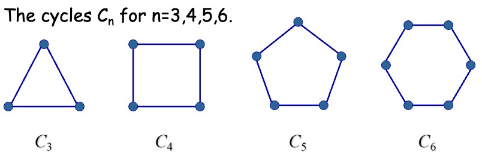
Wheels¶
当给圈图 \(C_n(n\geq 3)\) 添加另一个顶点，并把这个新顶点与 \(C_n\) 中的 \(n\) 个顶点逐个连接时，就得到轮图（Wheels） \(W_n\)。

n-Cubes¶
\(n\) 立方体图（n-Cubes）记作 \(Q_n\)，是用顶点表示 \(2^n\) 个长度为 \(n\) 的比特串的图。两个顶点相邻，当且仅当它们所表示的比特串恰恰有一位不同。

可以从 \(n\) 立方体图 \(Q_n\) 来构造 \((n+1)\) 立方体图 \(Q_{n+1}\)，方法是建立 \(Q_n\) 的两个副本，在 \(Q_n\) 的一个副本的顶点标记前加 0，在 \(Q_n\) 的另一个副本的顶点标记前加 1，并且加入连接那些标记只在第一位不同的两个顶点的边。
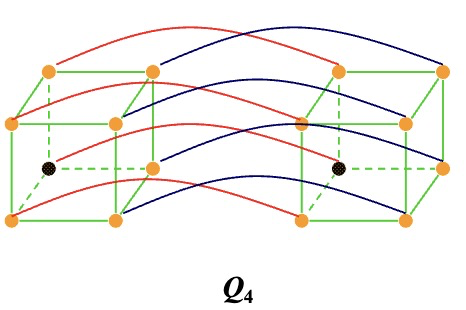
Bipartite Graphs¶
若把简单图 \(G\) 的顶点集分成两个不相交的非空集合 \(V_1\) 和 \(V_2\)，使得图中的每一条边都连接 \(V_1\) 中的一个顶点与 \(V_2\) 中的一个顶点（因此 \(G\) 中没有边连接 \(V_1\) 中的两个顶点或 \(V_2\) 中的两个顶点），则 \(G\) 称为二分图（Bipartite Graphs）。当此条件成立时，称 \((V_1,V_2)\) 为 \(G\) 的顶点集的一个二部划分（Bipartition）。

完全二分图（Complete Bipartite Graphs）\(K_{m,n}\) 是顶点集划分成分别含有 \(m\) 和 \(n\) 个顶点的两个子集的图，并且两个顶点之间有边当且仅当一个顶点属于第一个子集而另一个顶点属于第二个子集。

定理：一个简单图是二分图，当且仅当能够对图中的每个顶点赋予两种不同的颜色，并使得没有两个相邻的顶点被赋予相同的颜色。
Regular Graph¶
如果一个简单图中每个顶点都有相同的度，那么称这个简单图是规则的（Regular），特别地，如果每个顶点度都为 \(n\) ，那么称这个简单图是 \(n-\)规则的（n-Regular）。
New Graphs From Old¶
图 \(G=(V,E)\) 的子图（Subgraph）是图 \(H=(W,F)\)，其中 \(W\subseteq V\) 且 \(F\subseteq E\)。若 \(H\not= G\)，则称图 \(G\) 的子图 \(H\) 是 \(G\) 的真子图（Proper Subgraph）；若 \(W=V\) 且 \(F\subseteq E\)，则称图 \(G\) 的子图 \(H\) 是 \(G\) 的扩展子图（Spanning Subgraph）
令 \(G=(V,E)\) 是一个简单图，图 \((W,F)\) 是由顶点集 \(V\) 的子集 \(W\) 导出的子图（Subgraph Induced by a subset of V），其中边集 \(F\) 包含 \(E\) 中的一条边当且仅当这条边的两个端点都在 \(W\) 中。
已知图 \(G=(V,E)\)，边 \(e\in E\) ，删除边 \(e\) 得到图 \(G\) 的子图记作 \(G-e\) ，它和图 \(G\) 具有相同的顶点集，边集为 \(E-e\)，即 \(G-e=(V,E-\{e\})\)，类似地，若 \(E'\)是 \(E\) 的子集，我们可以通过从图中删除 \(E'\) 所有的边得到图 \(G\) 的子图，所得到的子图和 \(G\) 具有相同的顶点集，边集为 \(E-E'\)
已知图 \(G=(V,E)\)，边 \(e\in E\) ，添加边 \(e\) 得到图 \(G\) 的子图记作 \(G+e\) ，它和图 \(G\) 具有相同的顶点集，边集为 \(E\bigcup\{e\}\)，即 \(G+e=(V,E\bigcup\{e\})\)
边的收缩：有时当我们从图中删除一条边后，我们不希望将该边的端点作为独立的顶点保留在所得到的子图中，我们删除端点为 \(u\) 和 \(v\) 的边 \(e\)，把 \(u\) 和 \(v\) 合并成一个新的顶点 \(w\)，对每一条以 \(u\) 或 \(v\) 为端点的边，将该边 \(u\) 或 \(v\) 的位置替换成 \(w\) 且另一个端点不变。因此在图 \(G=(V,E)\) 中，对端点为 \(u\) 和 \(v\) 的边 \(e\) 进行收缩得到一个新图 \(G'=(V',E')\)（这并非 \(G\) 的子图），其中 \(V'=V-\{u,v\}\bigcup\{w\}\)，\(E'\) 包含 \(E\) 中不以 \(u\) 或 \(v\) 为端点的边以及连接 \(w\) 与集合 \(V\) 中所有与 \(u\) 或 \(v\) 相邻的顶点的边。
已知图 \(G=(V,E)\)，顶点 \(v\in V\) ，删除顶点 \(v\) 以及所有与它相关联的边，得到图 \(G\) 的子图记作 \(G-v\) ，\(G-v=(V-v,E')\)，其中 \(E'\) 是 \(G\) 中不与 \(v\) 相关联的边的集合。类似地，若 \(V'\) 是 \(V\) 的子集，则图 \(G-V'\) 是子图 \((V-V',E')\)，其中 \(E'\) 是 \(G\) 中不与 \(V'\) 中的顶点相关联的边的集合。
两个简单图 \(G_1=(V_1,E_1)\) 和 \(G_2=(V_2,E_2)\) 的并图（Graph Union）是带有顶点集 \(V_1\bigcup V_2\) 和边集 \(E_1\bigcup E_2\) 的简单图。\(G_1\) 和 \(G_2\) 的并图表示成 \(G_1\bigcup G_2\)。
Representing Graphs and Graph Isomorphism¶
Representing Graphs¶
用邻接表或邻接矩阵来表示，一般稀疏图用邻接表，稠密图用邻接矩阵。
关联矩阵：设 \(G=(V,E)\) 是无向图。设 \(v_1,v_2,...,v_n\) 是图 \(G\) 的顶点，而 \(e_1,e_2,...,e_m\) 是该图的边。相对于 \(V\) 和 \(E\) 的这个顺序的关联矩阵是 \(n\times m\) 的矩阵 \(M=[m_{ij}]\)，其中 \(m_{ij}=\begin{cases}1，当边 e_j 关联v_i 时\\0，其他情况\end{cases}\)
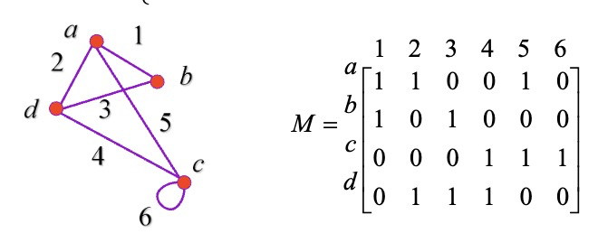
Isomophism Of Graphs¶
设 \(G_1=(V_1,E_1)\) 和 \(G_2=(V_2,E_2)\) 是简单图，若存在一对一的和映上的从 \(V_1\) 到 \(V_2\)的函数 \(f\) ，且 \(f\) 具有这样的性质：对 \(V_1\) 中所有的 \(a\) 和 \(b\) 来说，\(a\) 和 \(b\) 在 \(G_1\) 中相邻当且仅当 \(f(a)\) 和 \(f(b)\) 在 \(G_2\) 中相邻，则称 \(G_1\) 与 \(G_2\) 是同构的（Isomophic）。这样的函数 \(f\) 称为同构。两个不同构的简单图称为非同构的。
判断两个简单图同构与否的方法：
同构的简单图具有相同的顶点数和相同的边数。
同构的简单图的对应顶点的度必须相同。
Connectivity¶
Paths¶
设 \(n\) 是非负整数且 \(G\) 是无向图。在 \(G\) 中从 \(u\) 到 \(v\) 的长度为 \(n\) 的通路（Paths）是 \(G\) 的 \(n\) 条边 \(e_1,...,e_n\) 的序列，其中存在 \(x_0=u,x_1,...,x_n=v\) 的顶点序列，使得对于 \(i=1,...,n,e_i\) 以 \(x_{i-1}\) 和 \(x_i\) 作为端点。当这个图是简单图时，就用顶点序列 \(x_0,x_1,...,x_n\) 表示这条通路。若一条通路在相同的顶点开始和结束，即 \(u=v\) 且长度大于 0，则称其为一条回路（Circuit）；若通路或回路不重复地包含相同的边，则它是简单的（Simple Path/Circuit）。
设 \(n\) 是非负整数且 \(G\) 是有向图。在 \(G\) 中从 \(u\) 到 \(v\) 的长度为 \(n\) 的通路（Paths）是 \(G\) 的 \(n\) 条边 \(e_1,...,e_n\) 的序列，使得 \(f(e_1)=(x_0,x_1),f(e_2)=(x_1,x_2),...,f(e_n)=(x_{n-1},x_n)\)，其中 \(x_0=u,x_n=v\) 。当有向图中没有多重边时，就用顶点序列 \(x_0,x_1,...,x_n\) 表示这条通路。把在相同的顶点开始和结束的长度大于 0的通路为回路或圈（Circuit/Cycle）；若一条通路或回路不重复地包含相同的边，则它是简单的（Simple Path/Circuit）。
The definition of connected and disconnected¶
若无向图中每一对不同的顶点之间都有通路，则该图称为连通的（Connected），否则称为不连通的（Disconnected）。当从图中删除顶点或边，或两者时，得到了不连通的子图，就称将图变成不连通的（Disconnect the graph）
定理：在连通无向图的每一对不同顶点之间都存在简单通路。
连通分支（Connected Components）：图 \(G\) 的连通分支是 \(G\) 的连通子图，且该子图不是图 \(G\) 的另一个连通子图的真子图，即图 \(G\) 的连通分支是 \(G\) 的一个极大连通子图。
How connected is a graph?¶
当删除图中的一个顶点和它所关联的边，就产生比原图具有更多连通分支的子图，这个顶点被称为割点/关节点（Cut Vertex/Articulation Point）；如果删除一条边，就产生比原图具有更多连通分支的子图，这条边就称为割边/桥（Cut Edge/Bridge）。
并不是所有图都有割点，例如完全图 \(K_n(n\geq 3)\) 就没有割点，不含割点的连通图称为不可分割图（Nonseparable Graphs）
Vertex Connectivity¶
若 \(G-V'\) 是不连通的，则称 \(G=(V,E)\) 的顶点集 \(V\) 的子集 \(V'\) 是点割集/分割集（Vertex Cut/Separating Set）
除了完全图以外，每一个连通图都有一个点割集，定义非完全图的点连通度（Vertex Connectivity）为点割集中最小的顶点数，记作 \(\kappa(G)\)，对于每一个图 \(G\) ，\(\kappa(G)\) 是使 \(G\) 变成不连通的图或只含有一个顶点的图所需删除的最小的顶点数。
若 \(G\) 是不连通的或 \(G=K_1\)，\(\kappa(G)=0\)
若 \(G\) 是含有点割集的连通图或 \(K_2\)，\(\kappa(G)=1\)
若 \(G\) 是完全图，\(\kappa(G)=n-1\)
如果 \(G\) 含有 \(n\) 个顶点，\(0\leq\kappa(G)\leq n-1\)
\(\kappa(G)\) 越大，我们认为 \(G\) 的连通性越好。若 \(\kappa(G)\geq k\)，我们称图为 \(k\) 连通的/\(k\) 顶点-连通的（K-connected/K-vertex-connected）
Edge Connectivity¶
如果 \(G-E'\) 是不连通的，那么称边集 \(E'\) 为图 \(G\) 的边割集（Edge Cut）。
图 \(G\) 的边连通度（Edge Connectivity），记作 \(\lambda(G)\)，是图 \(G\) 的边割集中的最小的边数。对于每一个图 \(G\) ，\(\lambda(G)\) 是使 \(G\) 变成不连通的图所需删除的最小的边数。
若 \(G\) 是不连通的或只含有一个顶点，则 \(\lambda(G)=0\)
若 \(G\) 是完全图，\(\lambda(G)=n-1\)
如果 \(G\) 含有 \(n\) 个顶点，\(0\leq\lambda(G)\leq n-1\)
An inequality for vertex connectivity and edge connectivity¶
若 \(G\) 是一个连通的非完全图，则 \(\kappa(G)\leq\lambda(G)\)
若 \(n\) 为正整数，则 \(\kappa(K_n)=\lambda(K_n)=\min\limits_{v\in V} deg(v)=n-1\)
若 \(G\) 是不连通的图，则 \(\kappa(G)=\lambda(G)=0\)
对所有的图 \(G\) 有 \(\kappa(G)\leq\lambda(G)\leq\min\limits_{v\in V}deg(v)\)
Connectedness in directed graphs¶
若对于有向图中的任意顶点 \(a\) 和 \(b\)，都有从 \(a\) 到 \(b\) 和从 \(b\) 到 \(a\) 的通路，则该图是强连通的（Strongly Connected）。
若在有向图的基本无向图中，任何两个定点之间都有通路，则该有向图是弱连通的（Weakly Connected）。
若一个有向图 \(G\) 的子图是强连通的，且不包含在更大的强连通子图中，即极大强连通子图，则这个子图被称为 \(G\) 的强连通分支/强分支（Strong Components）
Paths and Isomorphism¶
对于一些含有通路的图，如果两个图含有相同长度的简单回环，则它们可能是同构的；如果两个图含有的两个通路按顺序经过的顶点都含有相同的度，则它们可能是同构的。
Counting Paths Between Vertices¶
定理：设 \(G\) 是一个图，该图的邻接矩阵 \(A\) 包含顶点 \(v_1,v_2,...,v_n\)（允许带有无向或有向边、带有多重边和环）。从 \(v_i\) 到 \(v_j\) 长度为 \(r\) 的不同通路的数目等于 \(A^r\) 的第 \((i,j)\) 项，其中 \(r\) 是正整数。
Euler and Hamilton Paths¶
Terminologies¶
欧拉通路（Euler Paths）：包含图 \(G\) 的每一条边的简单通路。
欧拉回路（Euler Circuits）：包含图 \(G\) 的每一条边的简单回路。
欧拉图（Euler Graphs）：一个含有欧拉回路的图。
哈密顿通路（Hamilton Paths）：一条通过 \(G\) 中每个顶点仅一次的通路。
哈密顿回路（Hamilton Circuits/Cycles）：一条通过 \(G\) 中每个顶点（除了起点）的回路。
哈密顿图（Hamilton Graphs）：一个含有哈密顿回路的连通图 \(G\)。
Necessary and Sufficient Condition for Euler Circuits and Paths¶
定理：含有至少两个顶点的连通多重图具有欧拉回路当且仅当它的每个顶点的度都为偶数；连通多重图具有欧拉通路但无欧拉回路当且仅当它恰有两个度为奇数的顶点。
Euler Circuits and Paths in Directed Graphs¶
一个没有孤立点的有向多重图具有欧拉回路当且仅当它是弱连通的且每个顶点的入度和出度是相等的。
一个没有孤立点的有向多重图具有欧拉通路但无欧拉回路当且仅当它是弱连通的且除了某两个顶点其他所有顶点的入度与出度相等，这两个顶点一个入度比出度多 1，另一个出度比入度多 1。
Conditions for the Existence of Hamilton Path and Hamilton Circuit¶
狄拉克定理（DIRAC’THEOREM）：如果 \(G\) 是有 \(n\) 个顶点的简单图，其中 \(n\geq 3\)，并且 \(G\) 中每个顶点的度都至少为 \(\frac{n}{2}\)，则 \(G\) 有哈密顿回路。
欧尔定理（ORE’THEOREM）：如果 \(G\) 是有 \(n\) 个顶点的简单图，其中 \(n\geq 3\)，并且对于 \(G\) 中每一对不相邻的顶点 \(u\) 和 \(v\) 来说，都有 \(deg(u)+deg(v)\geq n\)， 则 \(G\) 有哈密顿回路。
一个含有度为 1 的顶点的图没有哈密顿回路。
如果一个图中的顶点度为 2，那么与这个顶点相关联的两条边必定都是哈密顿回路的一部分。
如果一个哈密顿回路在生成过程中，通过一个顶点，除了使用的两条边，其他的边都不需要考虑。
对于 \(V\) 的任意一个非空子集 \(S\)，\(G-S\) 的连通分支个数 \(\leq|S|\)
Shortest-Path Problems¶
Planar Graphs¶
Definition of Planar Graph¶
若可以在平面中画出一个图而边没有任何交叉，则这个图是平面图（Planar Graph）。这种画法称为这个图的平面表示（Planar Representation）。
Euler's Formula¶
面（Region）：一个图的平面表示把平面分割成一些面。面分为有界面（Bounded Region）和无界面（Unbounded Region）。
e.g.一个图的平面表示将整个平面分为 6 个面。其中 \(R_6\) 为无界面，\(R_1,R_2,R_3,R_4,R_5\) 为有界面。

若一个面 \(R\) 是一个连通平面简单图，则 \(R\) 的度，记作 \(deg(R)\)，为围成面 \(R\) 的边数。对一个平面图 \(G=(V,E)\)，有 \(2E=\sum\limits_{所有面 R}deg(R)\)。
如果两个面有一条共同边界，那么称这两个面是邻接的（Adjacent）。
如果边 \(e\) 不是一条割边，那么它一定是两个面的共同边界。
欧拉公式：设 \(G\) 是带 \(e\) 条边和 \(v\) 个顶点的连通平面简单图。设 \(r\) 是 \(G\) 的平面表示中的面数。则 \(r=e-v+2\)。更一般地，对于一个含有 \(k\) 个连通分支，\(e\) 条边和 \(v\) 个顶点的平面图 \(G\)，设 \(r\) 是 \(G\) 的平面表示中的面数。则 \(r=e-v+k+1\)。
推论 1：若 \(G\) 是 \(e\) 条边和 \(v\) 个顶点的连通平面简单图，其中 \(v\geq 3\)，则 \(e\leq 3v-6\)。
推论 2：若 \(G\) 是连通平面简单图，则 \(G\) 中有度数不超过 5 的顶点。
推论 3：若连通平面简单图有 \(e\) 条边和 \(v\) 个顶点，\(v\geq 3\) 并且没有长度为 3的回路，则 \(e\leq 2v-4\)。
KURATOWSKI'S THEOREM¶
初等细分（Elementary Subdivision）：若一个图是平面图，则通过删除一条边 \(\{u,v\}\) 并且添加一个新顶点 \(w\) 和两条边 \(\{u,w\}\) 与 \(\{w,v\}\) 获得的任何图也是平面图，这种操作称为初等细分。
若可以从相同的图通过一系列初等细分来获得图 \(G_1=(V_1,E_1)\) 和图 \(G_2=(V_2,E_2)\)，则称它们是同胚的（Homeomorphic）。
库拉图斯基定理：一个图是非平面图当且仅当它包含一个同胚于 \(K_{3,3}\) 或 \(K_5\) 的子图。
Graph Coloring¶
Dual Graph¶
平面中的每幅地图都可以表示成一个图。将地图的每个区域都表示成一个顶点。若两个顶点所表示的区域具有公共边界，则用边连接这两个顶点。只相交于一个点的两个区域不算是相邻的。这样所得到的图称为这个地图的对偶图（Dual Graph）。
The chromatic numbers of a graph¶
定义 1：简单图的着色（Coloring）是对该图的每个顶点都指定一种颜色，使得没有两个相邻的顶点颜色相同。
定义 2：图的着色数（Chromatic Number）是着色这个图所需要的最少颜色数。图 G 的着色数记作 \(\chi(G)\)
四色定理：平面图的着色数不超过 4。
Chapter 11 Trees¶
Introduction to Trees¶
Tree¶
定义 1：树（Tree）是没有简单回路的连通无向图。
因为树没有简单回路，所以树不含多重边或环。因此任何树都必然是简单图。
定义 2：不含简单回路但不一定连通的图是森林（Forest）。
森林的每个连通分支都是树。
定理 1：一个无向图是树当且仅当在它的每对顶点之间存在唯一简单通路。
Root Tree¶
定义：有根树（Root Tree）是指定一个顶点作为根并且每条边的方向都离开根的树。
Parent VS Child¶
若 \(v\) 是 \(T\) 中的非根顶点，则 \(v\) 的父母（Parent）是从 \(u\) 到 \(v\) 存在有向边的唯一的顶点 \(u\) 。当 \(u\) 是 \(v\) 的父母时，\(v\) 称为 \(u\) 的孩子（Child）。
Sibling¶
具有相同父母的顶点称为兄弟（Sibling）。
Ancestors VS Descendants¶
非根顶点的祖先（Ancestors）是从根到该顶点通路上的顶点，不包括该顶点自身但包括根。顶点 \(v\) 的后代（Descendants）是以 \(v\) 作为祖先的顶点。
Leaf¶
树的顶点若没有孩子，则该顶点称为树叶（Leaf）。
Internal Vertex¶
有孩子的顶点称为内点（Internal Vertex）。
Subtree¶
若 \(a\) 是树中的顶点，则以 \(a\) 为根的子树（Subtree）是由 \(a\) 和 \(a\) 的后代以及这些定点所关联的边所组成的该树的子图。
m-ary Rooted Trees¶
若有根树的每个内点都有不超过 \(m\) 个孩子，则称它为 \(m\) 叉树（m-ary Rooted Trees）。若该树的每个内点都恰好有 \(m\) 个孩子，则称它为满 \(m\) 叉树（Full m-ary Tree）。把 \(m=2\) 的 \(m\) 叉树称为二叉树。
Ordered Rooted Tree¶
定义：有序根树（Ordered Rooted Tree）是把每个内点的孩子都排序的有根树。
画有序根树时，以从左向右的顺序来显示每个内点的孩子。
在有序二叉树（通常只称为二叉树）中，若一个内点有 \(2\) 个孩子，则第一个孩子称为左子（Left Child）而第二个孩子称为右子（Right Child）。以一个顶点的左子为根的树称为该顶点的左子树（Left Subtree），而以一个顶点的右子为根的树称为该顶点的右子树（Right Subtree）。
Properties of Trees¶
定理 1：带有 \(n\) 个顶点的树含有 \(n-1\) 条边。
定理 2：带有 \(i\) 个内点的满 \(m\) 叉树含有 \(n=mi+1\) 个顶点。
定理 3：一个满 \(m\) 叉树若有：
(i) \(n\) 个顶点，则有 \(i=\frac{n-1}{m}\) 个内点和 \(l=\frac{(m-1)n+1}{m}\) 个树叶。
(ii) \(i\) 个内点，则有 \(n=mi+1\) 个顶点和 \(l=(m-1)i+1\) 个树叶。
(iii) \(l\) 个树叶，则有 \(n=\frac{ml-1}{m-1}\) 个顶点和 \(i=\frac{l-1}{m-1}\) 个内点。
Level of Vertices and Height of Trees¶
根树中的一个顶点 \(v\) 的等级（Level）是从根到 \(v\) 的唯一通路的长度。
一个根树的高度（Height）是其所有顶点的等级的最大值。
Balanced m-ary Trees¶
若一颗高度为 \(h\) 的 \(m\) 叉树的所有树叶都在 \(h\) 层或 \(h-1\) 层，则这棵树是平衡的（Balanced）。
The Bound for the Number of Leaves in an m-ary Tree¶
定理：在高度为 \(h\) 的 \(m\) 叉树中至多有 \(m^h\) 个树叶。
Applications of Trees¶
二叉搜索树与决策树与 fds 讲述内容相同。
Prefix Codes¶
为了保证没有比特串对应着多个字母的序列，可以令一个字母 de 比特串永远不出现在另一个字母的比特串的开头部分，具有这个性质的编码称为前缀码（Prefix Codes），可以用任何二叉树来构造一个前缀码，其中每个内点的左边都用 0 标记，而右边都用 1 标记，树叶都用字符标记。字符都用从根到这个树叶的唯一通路中的边的标记所组成的比特串来编码。
e.g. 把 e 编码成 0，把 a 编码成 10，把 t 编码成 110，把 n 编码成 1110，把 s 编码成 1111（如下图），则编码为 11111011100 的单词为 sane。
Huffman Coding¶
Tree Traversal¶
与 fds 所讲前中后序遍历、表达式树相同。
Spanning Trees¶
深度宽度优先搜索、回溯等算法均在 fds 讲解过。
The Definition of Spanning Tree¶
定义：设 \(G\) 是简单图，\(G\) 的生成树是包含 \(G\) 的每个顶点的 \(G\) 的一颗树。
定理：简单图是连通的当且仅当它有生成树。
Minimum Spanning Trees¶
与 fds 中所讲最小生成树算法（Prim、Kruskal）相同。